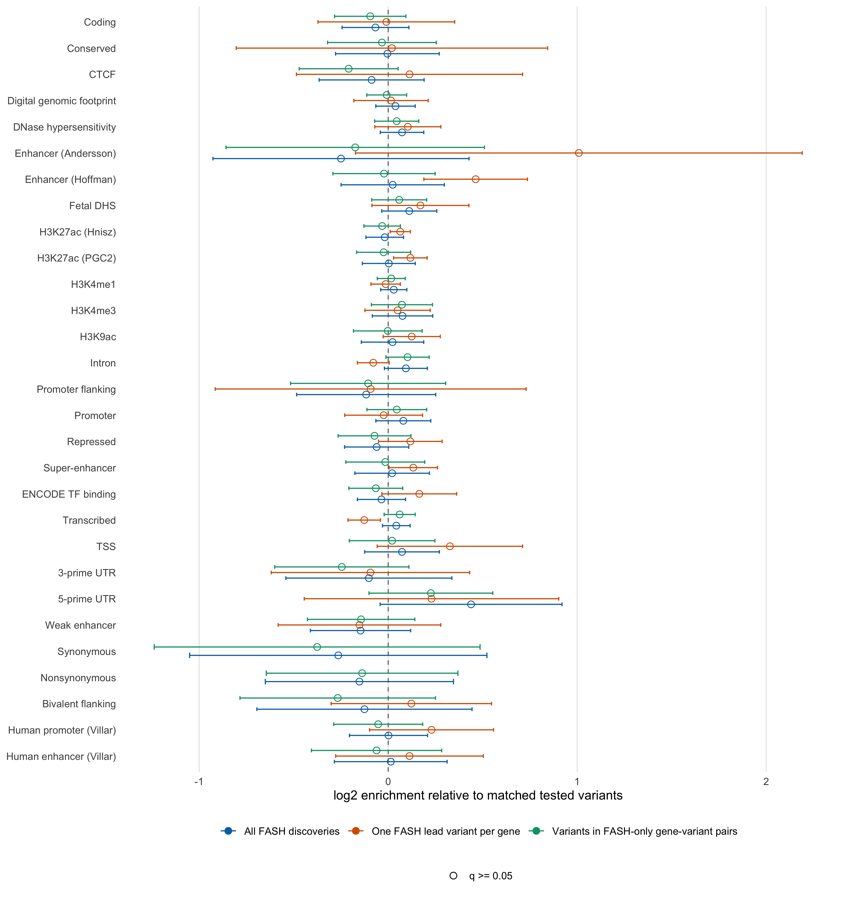
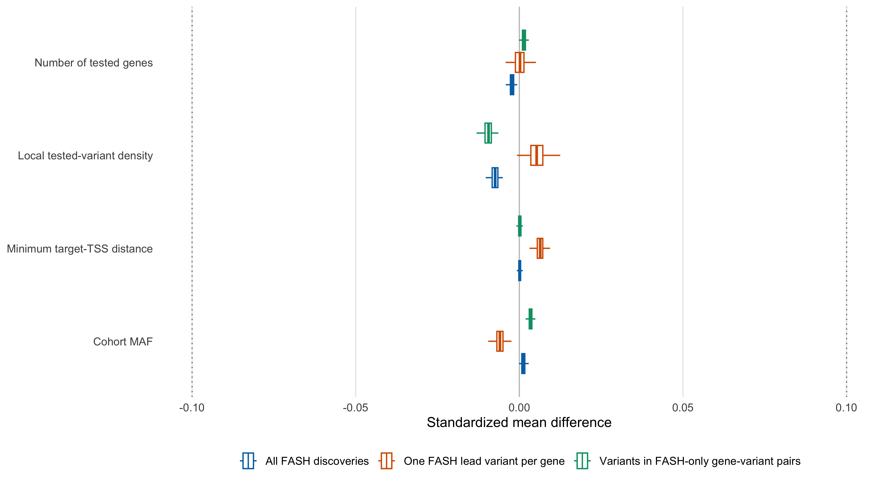

Last updated: 2026-08-07
Checks: 6 1
Knit directory: coderepo-local/
This reproducible R Markdown analysis was created with workflowr (version 1.7.2). The Checks tab describes the reproducibility checks that were applied when the results were created. The Past versions tab lists the development history.
The R Markdown is untracked by Git. To know which version of the R
Markdown file created these results, you’ll want to first commit it to
the Git repo. If you’re still working on the analysis, you can ignore
this warning. When you’re finished, you can run
wflow_publish to commit the R Markdown file and build the
HTML.
Great job! The global environment was empty. Objects defined in the global environment can affect the analysis in your R Markdown file in unknown ways. For reproduciblity it’s best to always run the code in an empty environment.
The command set.seed(20251109) was run prior to running
the code in the R Markdown file. Setting a seed ensures that any results
that rely on randomness, e.g. subsampling or permutations, are
reproducible.
Great job! Recording the operating system, R version, and package versions is critical for reproducibility.
Nice! There were no cached chunks for this analysis, so you can be confident that you successfully produced the results during this run.
Great job! Using relative paths to the files within your workflowr project makes it easier to run your code on other machines.
Great! You are using Git for version control. Tracking code development and connecting the code version to the results is critical for reproducibility.
The results in this page were generated with repository version 9fbd863. See the Past versions tab to see a history of the changes made to the R Markdown and HTML files.
Note that you need to be careful to ensure that all relevant files for
the analysis have been committed to Git prior to generating the results
(you can use wflow_publish or
wflow_git_commit). workflowr only checks the R Markdown
file, but you know if there are other scripts or data files that it
depends on. Below is the status of the Git repository when the results
were generated:
Ignored files:
Ignored: .DS_Store
Ignored: .Rhistory
Ignored: .Rproj.user/
Ignored: analysis/.DS_Store
Ignored: analysis/.Rhistory
Ignored: code/.DS_Store
Ignored: code/.Rhistory
Ignored: data/appendixB/
Ignored: data/dynamic_eQTL_real/
Ignored: data/revision_simulations/
Ignored: data/toy_example/
Ignored: output/dynamic_eQTL_real/
Ignored: output/pdf/
Ignored: output/revision_simulations/
Untracked files:
Untracked: Rplots.pdf
Untracked: analysis/revision_balanced_variant_thinning.rmd
Untracked: analysis/revision_combined_spiky_genotype_simulation.rmd
Untracked: analysis/revision_correlated_error_simulation.rmd
Untracked: analysis/revision_functional_testing_simulation.rmd
Untracked: analysis/revision_genotype_level_simulation.rmd
Untracked: analysis/revision_internal_baseline_ld_variant_enrichment.rmd
Untracked: analysis/revision_internal_correlated_likelihood_sensitivity.rmd
Untracked: analysis/revision_internal_mashr_mean_z_null_correlation.rmd
Untracked: analysis/revision_internal_observational_null_set_pilot.rmd
Untracked: analysis/revision_internal_one_variant_per_gene_refit.rmd
Untracked: analysis/revision_internal_real_genotype_simulation.rmd
Untracked: analysis/revision_internal_targeted_broad_calibration.rmd
Untracked: analysis/revision_internal_variant_annotation_enrichment.rmd
Untracked: analysis/revision_internal_zero_intercept_correlation.rmd
Untracked: analysis/revision_ld_tagging_switch_example.rmd
Untracked: code/00_eQTLs_CL.R
Untracked: code/01_fash_CL.R
Untracked: code/01_fash_CL.sbatch
Untracked: code/09_penalty_sensitivity.R
Untracked: code/09_penalty_sensitivity.sbatch
Untracked: code/revision_simulations/
Untracked: fash_prior_comparison_order1_after.pdf
Untracked: fash_prior_comparison_order1_after.png
Untracked: fash_prior_comparison_order1_before.pdf
Untracked: fash_prior_comparison_order1_before.png
Untracked: fash_prior_comparison_order2_after.pdf
Untracked: fash_prior_comparison_order2_after.png
Untracked: fash_prior_comparison_order2_before.pdf
Untracked: fash_prior_comparison_order2_before.png
Unstaged changes:
Modified: .gitignore
Modified: analysis/dynamic_eQTL_real.rmd
Modified: analysis/index.Rmd
Modified: analysis/nonlinear_dynamic_eQTL_real.Rmd
Modified: code/README.md
Modified: output/toy_example/toy_example_11.pdf
Modified: output/toy_example/toy_example_12.pdf
Modified: output/toy_example/toy_example_21.pdf
Modified: output/toy_example/toy_example_22.pdf
Note that any generated files, e.g. HTML, png, CSS, etc., are not included in this status report because it is ok for generated content to have uncommitted changes.
There are no past versions. Publish this analysis with
wflow_publish() to start tracking its development.
This analysis asks whether FASH discoveries are enriched in the standardized functional categories distributed with baselineLD v2.2. It examines the three sets requested for this follow-up:
Provisional readout. No baselineLD binary annotation passed within-set BH q < 0.05 for any of the three requested FASH sets. All-FASH’s smallest q-value was 0.057 for Ancient_Sequence_Age_Human_Enhancer (1.51-fold). The one-lead-per-gene set showed a suggestive Hoffman enhancer estimate of 1.38-fold (95% CI on the fold scale 1.14–1.67; q = 0.072), but it did not cross the pre-specified multiple-testing threshold. Variants participating in exact FASH-only gene-variant pairs did not show a BH-significant baselineLD category.
The one-lead enhancer estimate is the most interesting hint in this analysis, but the current result does not support a thresholded claim that FASH variants are broadly enriched in baselineLD functional categories.
The canonical source is the S-LDSC reference-files record
on Zenodo, specifically
1000G_Phase3_baselineLD_v2.2_ldscores.tgz. That archive
contains both annotation files and precomputed annotation-specific LD
scores. This page uses the chromosome-specific .annot.gz
columns as variant annotations; it does not run S-LDSC
or interpret the result as partitioned heritability.
The Zenodo archive was slow to transfer during this interactive run. The same 22 chromosome annotation files were therefore retrieved individually from the Song Lab mirror, with exact byte sizes and SHA256 hashes recorded. LD-score, PLINK, log, and count files were not downloaded.
render_scrollable_table(
runtime_table,
align = "lrl",
minimum_width = "760px"
)| Stage | Elapsed seconds | Definition |
|---|---|---|
| annotation_download_validation | 47.0 | Measured separately during the validated download run |
| annotation_parse_and_subset | 77.2 | Includes column classification and 22 chromosome subsets |
| matched_enrichment | 53.5 | Three sets, 100 seeds, five controls, and chromosome jackknives |
| analysis_through_cache_assembly | 250.0 | Excludes final compressed cache serialization |
render_scrollable_table(
resource_table,
align = "lr",
minimum_width = "700px"
)| Quantity | Value |
|---|---|
| Downloaded annotation bytes | 416186492.000 |
| Downloaded annotation MiB | 396.906 |
| Covered tested variants | 557405.000 |
| Binary annotation columns analyzed | 83.000 |
| Continuous annotation columns documented but not analyzed | 13.000 |
| Binary annotation matrix bytes in R | 229637864.000 |
| Covered matching table bytes in R | 95178544.000 |
| Maximum absolute matching SMD | 0.014 |
The annotation-only download was 396.9 MiB and completed in approximately 47 seconds. Annotation parsing and subsetting took 77.2 seconds; the 100-seed matched analysis took 53.5 seconds. The full analysis through cache assembly took 250.0 seconds. The retained annotation matrix occupied approximately 219.0 MiB in R. This is a routine laptop-scale analysis rather than a cluster-scale job.
FASH calls use cumulative-lfdr FDR at 0.05 after the BF update. Strober linear and nonlinear calls use their reported eFDR at 0.05. The first and third sets are collapsed to unique rsIDs before enrichment so that a variant is not counted repeatedly merely because it was tested against several genes.
render_scrollable_table(
pair_summary_table,
align = "lrrrrr",
minimum_width = "900px"
)| Discovery set | Gene-variant pairs | Unique variants | Unique genes | baselineLD-covered variants | Coverage |
|---|---|---|---|---|---|
| All FASH discoveries | 9205 | 9139 | 1177 | 7075 | 77.4% |
| One FASH lead variant per gene | 1177 | 1170 | 1177 | 918 | 78.5% |
| Variants in FASH-only gene-variant pairs | 8062 | 8001 | 1119 | 6141 | 76.8% |
The FASH-only set begins with 8,062 exact gene-variant pairs, representing 8,001 unique variants and 1,119 genes. A variant is retained if it participates in at least one FASH-only pair; the same variant may still participate in a different pair shared with a Strober method.
The 1000G EUR baselineLD annotation universe does not contain every variant in the YRI study VCF. The matched universe and all three discovery sets were therefore restricted to rsIDs present in baselineLD before controls were sampled.
render_scrollable_table(
coverage_table,
align = "lrrrr",
minimum_width = "860px"
)| Set | Original variants | Covered variants | Coverage | Difference from background |
|---|---|---|---|---|
| Tested-variant universe | 745867 | 557405 | 74.7% | 0.0 pp |
| All FASH discoveries | 9139 | 7075 | 77.4% | 2.7 pp |
| One FASH lead variant per gene | 1170 | 918 | 78.5% | 3.7 pp |
| Variants in FASH-only gene-variant pairs | 8001 | 6141 | 76.8% | 2.0 pp |
The tested background coverage is 74.7%. Coverage is modestly higher for each FASH set, by 2.0–3.7 percentage points, but remains inside the pre-specified 10-point imbalance boundary. Matching is performed anew within the covered universe.
Each selected variant is matched to five non-selected tested variants on chromosome, cohort MAF, minimum distance to a tested target-gene TSS, local tested-variant density within +/-1 Mb, and the number of tested genes. Matching is repeated over 100 fixed seeds. Points pool matched controls across seeds; intervals are delete-one-autosome jackknife 95% intervals. Filled points would mark within-set BH q below 0.05 across all 83 analyzed binary annotations.
plot_core_enrichment()
Figure 1. baselineLD v2.2 functional-annotation enrichment for all FASH discoveries, one FASH lead variant per gene, and variants participating in exact FASH-only gene-variant pairs. Enrichment is relative to matched variants from the baselineLD-covered tested universe. Error bars are delete-one-chromosome 95% intervals.
No point is filled because no annotation passed the within-set BH threshold. Three aspects are worth distinguishing:
render_scrollable_table(
core_numeric_table,
digits = 4L,
minimum_width = "1380px"
)| Discovery set | Annotation | Selected overlap | Selected total | Control overlap | Control total | Fold enrichment | log2 enrichment | CI lower | CI upper | p-value | BH q-value |
|---|---|---|---|---|---|---|---|---|---|---|---|
| All FASH discoveries | Coding | 275 | 7075 | 144085 | 3537500 | 0.9543 | -0.0675 | -0.2443 | 0.1094 | 0.4545 | 0.9888 |
| All FASH discoveries | Conserved | 172 | 7075 | 86266 | 3537500 | 0.9969 | -0.0045 | -0.2787 | 0.2698 | 0.9746 | 0.9888 |
| All FASH discoveries | CTCF | 208 | 7075 | 110530 | 3537500 | 0.9409 | -0.0879 | -0.3656 | 0.1899 | 0.5353 | 0.9888 |
| All FASH discoveries | Digital genomic footprint | 1472 | 7075 | 716620 | 3537500 | 1.0270 | 0.0385 | -0.0658 | 0.1428 | 0.4694 | 0.9888 |
| All FASH discoveries | DNase hypersensitivity | 1500 | 7075 | 712950 | 3537500 | 1.0520 | 0.0731 | -0.0420 | 0.1882 | 0.2133 | 0.9888 |
| All FASH discoveries | Enhancer (Andersson) | 47 | 7075 | 27944 | 3537500 | 0.8410 | -0.2499 | -0.9274 | 0.4276 | 0.4698 | 0.9888 |
| All FASH discoveries | Enhancer (Hoffman) | 651 | 7075 | 320152 | 3537500 | 1.0167 | 0.0239 | -0.2492 | 0.2970 | 0.8638 | 0.9888 |
| All FASH discoveries | Fetal DHS | 865 | 7075 | 400436 | 3537500 | 1.0801 | 0.1111 | -0.0345 | 0.2568 | 0.1349 | 0.8610 |
| All FASH discoveries | H3K27ac (Hnisz) | 4487 | 7075 | 2272438 | 3537500 | 0.9873 | -0.0185 | -0.1179 | 0.0809 | 0.7154 | 0.9888 |
| All FASH discoveries | H3K27ac (PGC2) | 3255 | 7075 | 1624027 | 3537500 | 1.0021 | 0.0031 | -0.1371 | 0.1433 | 0.9656 | 0.9888 |
| All FASH discoveries | H3K4me1 | 4579 | 7075 | 2243334 | 3537500 | 1.0206 | 0.0294 | -0.0397 | 0.0984 | 0.4042 | 0.9888 |
| All FASH discoveries | H3K4me3 | 1999 | 7075 | 948507 | 3537500 | 1.0538 | 0.0755 | -0.0842 | 0.2353 | 0.3541 | 0.9888 |
| All FASH discoveries | H3K9ac | 2101 | 7075 | 1034029 | 3537500 | 1.0159 | 0.0228 | -0.1423 | 0.1879 | 0.7866 | 0.9888 |
| All FASH discoveries | Intron | 3967 | 7075 | 1859002 | 3537500 | 1.0670 | 0.0935 | -0.0201 | 0.2072 | 0.1067 | 0.8277 |
| All FASH discoveries | Promoter flanking | 172 | 7075 | 93241 | 3537500 | 0.9223 | -0.1166 | -0.4846 | 0.2514 | 0.5345 | 0.9888 |
| All FASH discoveries | Promoter | 977 | 7075 | 462219 | 3537500 | 1.0569 | 0.0798 | -0.0655 | 0.2250 | 0.2817 | 0.9888 |
| All FASH discoveries | Repressed | 1258 | 7075 | 656251 | 3537500 | 0.9585 | -0.0612 | -0.2311 | 0.1087 | 0.4803 | 0.9888 |
| All FASH discoveries | Super-enhancer | 2388 | 7075 | 1177079 | 3537500 | 1.0144 | 0.0206 | -0.1765 | 0.2177 | 0.8378 | 0.9888 |
| All FASH discoveries | ENCODE TF binding | 1518 | 7075 | 778093 | 3537500 | 0.9755 | -0.0358 | -0.1632 | 0.0915 | 0.5812 | 0.9888 |
| All FASH discoveries | Transcribed | 4139 | 7075 | 2008916 | 3537500 | 1.0302 | 0.0429 | -0.0303 | 0.1160 | 0.2505 | 0.9888 |
| All FASH discoveries | TSS | 492 | 7075 | 233856 | 3537500 | 1.0519 | 0.0730 | -0.1244 | 0.2705 | 0.4684 | 0.9888 |
| All FASH discoveries | 3-prime UTR | 202 | 7075 | 108436 | 3537500 | 0.9314 | -0.1025 | -0.5416 | 0.3366 | 0.6474 | 0.9888 |
| All FASH discoveries | 5-prime UTR | 127 | 7075 | 46860 | 3537500 | 1.3551 | 0.4384 | -0.0428 | 0.9196 | 0.0741 | 0.8277 |
| All FASH discoveries | Weak enhancer | 249 | 7075 | 137799 | 3537500 | 0.9035 | -0.1464 | -0.4116 | 0.1188 | 0.2792 | 0.9888 |
| All FASH discoveries | Synonymous | 49 | 7075 | 29425 | 3537500 | 0.8326 | -0.2643 | -1.0508 | 0.5223 | 0.5102 | 0.9888 |
| All FASH discoveries | Nonsynonymous | 40 | 7075 | 22231 | 3537500 | 0.8996 | -0.1526 | -0.6503 | 0.3452 | 0.5480 | 0.9888 |
| All FASH discoveries | Bivalent flanking | 222 | 7075 | 121117 | 3537500 | 0.9165 | -0.1258 | -0.6952 | 0.4435 | 0.6648 | 0.9888 |
| All FASH discoveries | Human promoter (Villar) | 496 | 7075 | 247745 | 3537500 | 1.0010 | 0.0015 | -0.2052 | 0.2082 | 0.9888 | 0.9888 |
| All FASH discoveries | Human enhancer (Villar) | 434 | 7075 | 214983 | 3537500 | 1.0094 | 0.0135 | -0.2847 | 0.3117 | 0.9294 | 0.9888 |
| One FASH lead variant per gene | Coding | 41 | 918 | 20642 | 459000 | 0.9931 | -0.0100 | -0.3715 | 0.3516 | 0.9569 | 0.9954 |
| One FASH lead variant per gene | Conserved | 28 | 918 | 13811 | 459000 | 1.0137 | 0.0196 | -0.8044 | 0.8436 | 0.9628 | 0.9954 |
| One FASH lead variant per gene | CTCF | 36 | 918 | 16647 | 459000 | 1.0813 | 0.1127 | -0.4857 | 0.7112 | 0.7119 | 0.9730 |
| One FASH lead variant per gene | Digital genomic footprint | 196 | 918 | 96998 | 459000 | 1.0103 | 0.0148 | -0.1821 | 0.2118 | 0.8827 | 0.9730 |
| One FASH lead variant per gene | DNase hypersensitivity | 209 | 918 | 97245 | 459000 | 1.0746 | 0.1038 | -0.0709 | 0.2785 | 0.2442 | 0.6065 |
| One FASH lead variant per gene | Enhancer (Andersson) | 10 | 918 | 2485 | 459000 | 2.0121 | 1.0087 | -0.1731 | 2.1904 | 0.0943 | 0.3905 |
| One FASH lead variant per gene | Enhancer (Hoffman) | 110 | 918 | 39913 | 459000 | 1.3780 | 0.4626 | 0.1885 | 0.7366 | 0.0009 | 0.0723 |
| One FASH lead variant per gene | Fetal DHS | 123 | 918 | 54646 | 459000 | 1.1254 | 0.1705 | -0.0862 | 0.4271 | 0.1930 | 0.5308 |
| One FASH lead variant per gene | H3K27ac (Hnisz) | 609 | 918 | 291391 | 459000 | 1.0450 | 0.0635 | 0.0101 | 0.1169 | 0.0198 | 0.2445 |
| One FASH lead variant per gene | H3K27ac (PGC2) | 447 | 918 | 206071 | 459000 | 1.0846 | 0.1171 | 0.0283 | 0.2060 | 0.0098 | 0.1507 |
| One FASH lead variant per gene | H3K4me1 | 590 | 918 | 297800 | 459000 | 0.9906 | -0.0136 | -0.0913 | 0.0640 | 0.7308 | 0.9730 |
| One FASH lead variant per gene | H3K4me3 | 272 | 918 | 131411 | 459000 | 1.0349 | 0.0495 | -0.1231 | 0.2222 | 0.5740 | 0.9207 |
| One FASH lead variant per gene | H3K9ac | 300 | 918 | 137609 | 459000 | 1.0900 | 0.1244 | -0.0267 | 0.2755 | 0.1066 | 0.3910 |
| One FASH lead variant per gene | Intron | 461 | 918 | 243490 | 459000 | 0.9467 | -0.0791 | -0.1633 | 0.0051 | 0.0656 | 0.3234 |
| One FASH lead variant per gene | Promoter flanking | 21 | 918 | 11198 | 459000 | 0.9377 | -0.0929 | -0.9154 | 0.7297 | 0.8249 | 0.9730 |
| One FASH lead variant per gene | Promoter | 130 | 918 | 66099 | 459000 | 0.9834 | -0.0242 | -0.2303 | 0.1819 | 0.8181 | 0.9730 |
| One FASH lead variant per gene | Repressed | 192 | 918 | 88524 | 459000 | 1.0845 | 0.1170 | -0.0512 | 0.2851 | 0.1727 | 0.5115 |
| One FASH lead variant per gene | Super-enhancer | 332 | 918 | 151419 | 459000 | 1.0963 | 0.1326 | 0.0046 | 0.2606 | 0.0422 | 0.3065 |
| One FASH lead variant per gene | ENCODE TF binding | 234 | 918 | 104403 | 459000 | 1.1207 | 0.1643 | -0.0335 | 0.3621 | 0.1034 | 0.3910 |
| One FASH lead variant per gene | Transcribed | 467 | 918 | 254980 | 459000 | 0.9158 | -0.1270 | -0.2129 | -0.0410 | 0.0038 | 0.0729 |
| One FASH lead variant per gene | TSS | 77 | 918 | 30706 | 459000 | 1.2538 | 0.3263 | -0.0583 | 0.7110 | 0.0964 | 0.3905 |
| One FASH lead variant per gene | 3-prime UTR | 25 | 918 | 13342 | 459000 | 0.9369 | -0.0940 | -0.6189 | 0.4308 | 0.7255 | 0.9730 |
| One FASH lead variant per gene | 5-prime UTR | 17 | 918 | 7253 | 459000 | 1.1719 | 0.2289 | -0.4443 | 0.9021 | 0.5052 | 0.8840 |
| One FASH lead variant per gene | Weak enhancer | 32 | 918 | 17778 | 459000 | 0.9000 | -0.1520 | -0.5822 | 0.2782 | 0.4886 | 0.8749 |
| One FASH lead variant per gene | Synonymous | 8 | 918 | 4867 | 459000 | NA | NA | NA | NA | NA | NA |
| One FASH lead variant per gene | Nonsynonymous | 7 | 918 | 3877 | 459000 | NA | NA | NA | NA | NA | NA |
| One FASH lead variant per gene | Bivalent flanking | 40 | 918 | 18375 | 459000 | 1.0884 | 0.1223 | -0.3021 | 0.5467 | 0.5723 | 0.9207 |
| One FASH lead variant per gene | Human promoter (Villar) | 75 | 918 | 31993 | 459000 | 1.1721 | 0.2291 | -0.0988 | 0.5571 | 0.1709 | 0.5115 |
| One FASH lead variant per gene | Human enhancer (Villar) | 61 | 918 | 28213 | 459000 | 1.0811 | 0.1124 | -0.2780 | 0.5029 | 0.5725 | 0.9207 |
| Variants in FASH-only gene-variant pairs | Coding | 232 | 6141 | 123906 | 3070500 | 0.9362 | -0.0951 | -0.2839 | 0.0937 | 0.3234 | 0.9758 |
| Variants in FASH-only gene-variant pairs | Conserved | 145 | 6141 | 74189 | 3070500 | 0.9772 | -0.0332 | -0.3208 | 0.2544 | 0.8209 | 0.9758 |
| Variants in FASH-only gene-variant pairs | CTCF | 170 | 6141 | 98267 | 3070500 | 0.8650 | -0.2092 | -0.4709 | 0.0524 | 0.1170 | 0.9758 |
| Variants in FASH-only gene-variant pairs | Digital genomic footprint | 1239 | 6141 | 622941 | 3070500 | 0.9945 | -0.0080 | -0.1134 | 0.0974 | 0.8818 | 0.9758 |
| Variants in FASH-only gene-variant pairs | DNase hypersensitivity | 1292 | 6141 | 626164 | 3070500 | 1.0317 | 0.0450 | -0.0716 | 0.1616 | 0.4495 | 0.9758 |
| Variants in FASH-only gene-variant pairs | Enhancer (Andersson) | 41 | 6141 | 23137 | 3070500 | 0.8860 | -0.1746 | -0.8584 | 0.5093 | 0.6168 | 0.9758 |
| Variants in FASH-only gene-variant pairs | Enhancer (Hoffman) | 547 | 6141 | 277739 | 3070500 | 0.9847 | -0.0222 | -0.2927 | 0.2483 | 0.8723 | 0.9758 |
| Variants in FASH-only gene-variant pairs | Fetal DHS | 729 | 6141 | 350105 | 3070500 | 1.0411 | 0.0581 | -0.0873 | 0.2035 | 0.4333 | 0.9758 |
| Variants in FASH-only gene-variant pairs | H3K27ac (Hnisz) | 3841 | 6141 | 1963773 | 3070500 | 0.9780 | -0.0321 | -0.1286 | 0.0643 | 0.5136 | 0.9758 |
| Variants in FASH-only gene-variant pairs | H3K27ac (PGC2) | 2770 | 6141 | 1408346 | 3070500 | 0.9834 | -0.0241 | -0.1672 | 0.1190 | 0.7412 | 0.9758 |
| Variants in FASH-only gene-variant pairs | H3K4me1 | 3927 | 6141 | 1941732 | 3070500 | 1.0112 | 0.0161 | -0.0579 | 0.0901 | 0.6702 | 0.9758 |
| Variants in FASH-only gene-variant pairs | H3K4me3 | 1735 | 6141 | 824883 | 3070500 | 1.0517 | 0.0727 | -0.0889 | 0.2343 | 0.3781 | 0.9758 |
| Variants in FASH-only gene-variant pairs | H3K9ac | 1788 | 6141 | 895382 | 3070500 | 0.9985 | -0.0022 | -0.1840 | 0.1795 | 0.9808 | 0.9808 |
| Variants in FASH-only gene-variant pairs | Intron | 3467 | 6141 | 1614789 | 3070500 | 1.0735 | 0.1023 | -0.0120 | 0.2167 | 0.0794 | 0.9758 |
| Variants in FASH-only gene-variant pairs | Promoter flanking | 149 | 6141 | 80196 | 3070500 | 0.9290 | -0.1063 | -0.5168 | 0.3042 | 0.6118 | 0.9758 |
| Variants in FASH-only gene-variant pairs | Promoter | 828 | 6141 | 401201 | 3070500 | 1.0319 | 0.0453 | -0.1128 | 0.2034 | 0.5744 | 0.9758 |
| Variants in FASH-only gene-variant pairs | Repressed | 1091 | 6141 | 573536 | 3070500 | 0.9511 | -0.0723 | -0.2650 | 0.1204 | 0.4620 | 0.9758 |
| Variants in FASH-only gene-variant pairs | Super-enhancer | 2027 | 6141 | 1024521 | 3070500 | 0.9892 | -0.0156 | -0.2246 | 0.1934 | 0.8836 | 0.9758 |
| Variants in FASH-only gene-variant pairs | ENCODE TF binding | 1304 | 6141 | 682315 | 3070500 | 0.9556 | -0.0656 | -0.2081 | 0.0770 | 0.3674 | 0.9758 |
| Variants in FASH-only gene-variant pairs | Transcribed | 3625 | 6141 | 1738197 | 3070500 | 1.0427 | 0.0604 | -0.0219 | 0.1426 | 0.1501 | 0.9758 |
| Variants in FASH-only gene-variant pairs | TSS | 410 | 6141 | 202126 | 3070500 | 1.0142 | 0.0204 | -0.2062 | 0.2470 | 0.8601 | 0.9758 |
| Variants in FASH-only gene-variant pairs | 3-prime UTR | 158 | 6141 | 93654 | 3070500 | 0.8435 | -0.2455 | -0.6005 | 0.1096 | 0.1754 | 0.9758 |
| Variants in FASH-only gene-variant pairs | 5-prime UTR | 99 | 6141 | 42331 | 3070500 | 1.1694 | 0.2257 | -0.1019 | 0.5533 | 0.1768 | 0.9758 |
| Variants in FASH-only gene-variant pairs | Weak enhancer | 211 | 6141 | 116539 | 3070500 | 0.9053 | -0.1436 | -0.4277 | 0.1406 | 0.3220 | 0.9758 |
| Variants in FASH-only gene-variant pairs | Synonymous | 40 | 6141 | 25955 | 3070500 | 0.7706 | -0.3760 | -1.2381 | 0.4860 | 0.3926 | 0.9758 |
| Variants in FASH-only gene-variant pairs | Nonsynonymous | 35 | 6141 | 19260 | 3070500 | 0.9086 | -0.1383 | -0.6452 | 0.3687 | 0.5930 | 0.9758 |
| Variants in FASH-only gene-variant pairs | Bivalent flanking | 180 | 6141 | 108304 | 3070500 | 0.8310 | -0.2671 | -0.7843 | 0.2501 | 0.3115 | 0.9758 |
| Variants in FASH-only gene-variant pairs | Human promoter (Villar) | 410 | 6141 | 212681 | 3070500 | 0.9639 | -0.0531 | -0.2886 | 0.1824 | 0.6587 | 0.9758 |
| Variants in FASH-only gene-variant pairs | Human enhancer (Villar) | 350 | 6141 | 182647 | 3070500 | 0.9581 | -0.0617 | -0.4064 | 0.2830 | 0.7257 | 0.9758 |
render_scrollable_table(
full_results_table,
digits = 5L,
minimum_width = "1480px"
)| Discovery set | Annotation | Selected overlap | Selected total | Control overlap | Control total | Fold enrichment | log2 enrichment | CI lower | CI upper | p-value | BH q-value | Core figure |
|---|---|---|---|---|---|---|---|---|---|---|---|---|
| All FASH discoveries | Ancient_Sequence_Age_Human_Enhancer | 92 | 7075 | 30386 | 3537500 | 1.51386 | 0.59823 | 0.25302 | 0.94343 | 0.00068 | 0.05663 | FALSE |
| All FASH discoveries | H3K4me1_Trynka.flanking.500 | 1248 | 7075 | 672764 | 3537500 | 0.92752 | -0.10855 | -0.20092 | -0.01619 | 0.02125 | 0.79747 | FALSE |
| All FASH discoveries | Enhancer_Andersson.flanking.500 | 129 | 7075 | 84288 | 3537500 | 0.76523 | -0.38603 | -0.73216 | -0.03989 | 0.02882 | 0.79747 | FALSE |
| All FASH discoveries | UTR_5_UCSC | 127 | 7075 | 46860 | 3537500 | 1.35510 | 0.43840 | -0.04276 | 0.91956 | 0.07413 | 0.82769 | TRUE |
| All FASH discoveries | MAFbin1 | 429 | 7075 | 169378 | 3537500 | 1.26640 | 0.34073 | -0.03843 | 0.71989 | 0.07818 | 0.82769 | FALSE |
| All FASH discoveries | UTR_5_UCSC.flanking.500 | 491 | 7075 | 209788 | 3537500 | 1.17023 | 0.22679 | -0.04374 | 0.49732 | 0.10036 | 0.82769 | FALSE |
| All FASH discoveries | H3K4me3_peaks_Trynka | 651 | 7075 | 296628 | 3537500 | 1.09733 | 0.13400 | -0.03019 | 0.29820 | 0.10969 | 0.82769 | FALSE |
| All FASH discoveries | Intron_UCSC | 3967 | 7075 | 1859002 | 3537500 | 1.06697 | 0.09352 | -0.02012 | 0.20716 | 0.10674 | 0.82769 | TRUE |
| All FASH discoveries | MAFbin3 | 350 | 7075 | 222964 | 3537500 | 0.78488 | -0.34946 | -0.69961 | 0.00070 | 0.05045 | 0.82769 | FALSE |
| All FASH discoveries | SuperEnhancer_Hnisz.flanking.500 | 43 | 7075 | 31131 | 3537500 | 0.69063 | -0.53402 | -1.12229 | 0.05425 | 0.07520 | 0.82769 | FALSE |
| All FASH discoveries | Human_Promoter_Villar_ExAC.flanking.500 | 17 | 7075 | 14665 | 3537500 | 0.57961 | -0.78684 | -1.68451 | 0.11082 | 0.08579 | 0.82769 | FALSE |
| All FASH discoveries | MAFbin8 | 674 | 7075 | 396268 | 3537500 | 0.85043 | -0.23373 | -0.52989 | 0.06244 | 0.12191 | 0.84324 | FALSE |
| All FASH discoveries | FetalDHS_Trynka | 865 | 7075 | 400436 | 3537500 | 1.08007 | 0.11113 | -0.03454 | 0.25680 | 0.13485 | 0.86097 | TRUE |
| All FASH discoveries | DHS_peaks_Trynka | 1033 | 7075 | 481719 | 3537500 | 1.07220 | 0.10058 | -0.03785 | 0.23900 | 0.15441 | 0.91545 | FALSE |
| All FASH discoveries | MAFbin7 | 813 | 7075 | 343644 | 3537500 | 1.18291 | 0.24234 | -0.36798 | 0.85267 | 0.43642 | 0.98877 | FALSE |
| All FASH discoveries | MAFbin4 | 607 | 7075 | 269579 | 3537500 | 1.12583 | 0.17099 | -0.27228 | 0.61425 | 0.44961 | 0.98877 | FALSE |
| All FASH discoveries | Intron_UCSC.flanking.500 | 202 | 7075 | 91740 | 3537500 | 1.10094 | 0.13873 | -0.17408 | 0.45154 | 0.38470 | 0.98877 | FALSE |
| All FASH discoveries | Conserved_Vertebrate_phastCons46way | 218 | 7075 | 101138 | 3537500 | 1.07774 | 0.10800 | -0.07473 | 0.29073 | 0.24668 | 0.98877 | FALSE |
| All FASH discoveries | MAFbin9 | 834 | 7075 | 390973 | 3537500 | 1.06657 | 0.09298 | -0.29172 | 0.47768 | 0.63570 | 0.98877 | FALSE |
| All FASH discoveries | Promoter_UCSC | 977 | 7075 | 462219 | 3537500 | 1.05686 | 0.07978 | -0.06547 | 0.22504 | 0.28169 | 0.98877 | TRUE |
| All FASH discoveries | H3K4me3_Trynka | 1999 | 7075 | 948507 | 3537500 | 1.05376 | 0.07555 | -0.08424 | 0.23534 | 0.35410 | 0.98877 | TRUE |
| All FASH discoveries | DHS_Trynka | 1500 | 7075 | 712950 | 3537500 | 1.05197 | 0.07309 | -0.04201 | 0.18819 | 0.21327 | 0.98877 | TRUE |
| All FASH discoveries | TSS_Hoffman | 492 | 7075 | 233856 | 3537500 | 1.05193 | 0.07304 | -0.12439 | 0.27047 | 0.46840 | 0.98877 | TRUE |
| All FASH discoveries | Ancient_Sequence_Age_Human_Promoter | 146 | 7075 | 69908 | 3537500 | 1.04423 | 0.06244 | -0.32128 | 0.44616 | 0.74978 | 0.98877 | FALSE |
| All FASH discoveries | UTR_3_UCSC.flanking.500 | 322 | 7075 | 154525 | 3537500 | 1.04190 | 0.05922 | -0.23141 | 0.34986 | 0.68962 | 0.98877 | FALSE |
| All FASH discoveries | Coding_UCSC.flanking.500 | 986 | 7075 | 473649 | 3537500 | 1.04086 | 0.05777 | -0.14947 | 0.26501 | 0.58481 | 0.98877 | FALSE |
| All FASH discoveries | Transcr_Hoffman | 4139 | 7075 | 2008916 | 3537500 | 1.03016 | 0.04287 | -0.03025 | 0.11598 | 0.25055 | 0.98877 | TRUE |
| All FASH discoveries | Ancient_Sequence_Age_Human_Promoter.flanking.500 | 171 | 7075 | 83144 | 3537500 | 1.02834 | 0.04031 | -0.35654 | 0.43716 | 0.84219 | 0.98877 | FALSE |
| All FASH discoveries | FetalDHS_Trynka.flanking.500 | 1708 | 7075 | 831185 | 3537500 | 1.02745 | 0.03907 | -0.06890 | 0.14703 | 0.47819 | 0.98877 | FALSE |
| All FASH discoveries | DGF_ENCODE | 1472 | 7075 | 716620 | 3537500 | 1.02704 | 0.03850 | -0.06581 | 0.14280 | 0.46943 | 0.98877 | TRUE |
| All FASH discoveries | BivFlnk.flanking.500 | 302 | 7075 | 147821 | 3537500 | 1.02151 | 0.03070 | -0.34087 | 0.40227 | 0.87136 | 0.98877 | FALSE |
| All FASH discoveries | H3K4me1_Trynka | 4579 | 7075 | 2243334 | 3537500 | 1.02058 | 0.02939 | -0.03967 | 0.09844 | 0.40420 | 0.98877 | TRUE |
| All FASH discoveries | Enhancer_Hoffman | 651 | 7075 | 320152 | 3537500 | 1.01670 | 0.02390 | -0.24924 | 0.29704 | 0.86383 | 0.98877 | TRUE |
| All FASH discoveries | Conserved_Primate_phastCons46way.flanking.500 | 1430 | 7075 | 703565 | 3537500 | 1.01625 | 0.02326 | -0.09795 | 0.14447 | 0.70683 | 0.98877 | FALSE |
| All FASH discoveries | H3K9ac_Trynka | 2101 | 7075 | 1034029 | 3537500 | 1.01593 | 0.02280 | -0.14230 | 0.18790 | 0.78665 | 0.98877 | TRUE |
| All FASH discoveries | SuperEnhancer_Hnisz | 2388 | 7075 | 1177079 | 3537500 | 1.01438 | 0.02059 | -0.17651 | 0.21769 | 0.83775 | 0.98877 | TRUE |
| All FASH discoveries | Human_Enhancer_Villar | 434 | 7075 | 214983 | 3537500 | 1.00938 | 0.01347 | -0.28475 | 0.31169 | 0.92944 | 0.98877 | TRUE |
| All FASH discoveries | H3K9ac_peaks_Trynka | 703 | 7075 | 349332 | 3537500 | 1.00621 | 0.00893 | -0.22169 | 0.23954 | 0.93953 | 0.98877 | FALSE |
| All FASH discoveries | Transcr_Hoffman.flanking.500 | 1738 | 7075 | 864605 | 3537500 | 1.00508 | 0.00731 | -0.10285 | 0.11748 | 0.89645 | 0.98877 | FALSE |
| All FASH discoveries | TFBS_ENCODE.flanking.500 | 1937 | 7075 | 964158 | 3537500 | 1.00450 | 0.00648 | -0.09727 | 0.11024 | 0.90254 | 0.98877 | FALSE |
| All FASH discoveries | Conserved_Mammal_phastCons46way.flanking.500 | 2758 | 7075 | 1375401 | 3537500 | 1.00262 | 0.00377 | -0.10203 | 0.10957 | 0.94432 | 0.98877 | FALSE |
| All FASH discoveries | H3K27ac_PGC2 | 3255 | 7075 | 1624027 | 3537500 | 1.00214 | 0.00308 | -0.13711 | 0.14327 | 0.96563 | 0.98877 | TRUE |
| All FASH discoveries | DGF_ENCODE.flanking.500 | 3414 | 7075 | 1703496 | 3537500 | 1.00206 | 0.00296 | -0.06472 | 0.07065 | 0.93159 | 0.98877 | FALSE |
| All FASH discoveries | Human_Promoter_Villar | 496 | 7075 | 247745 | 3537500 | 1.00103 | 0.00148 | -0.20518 | 0.20815 | 0.98877 | 0.98877 | TRUE |
| All FASH discoveries | Conserved_Vertebrate_phastCons46way.flanking.500 | 3247 | 7075 | 1624308 | 3537500 | 0.99950 | -0.00072 | -0.08662 | 0.08519 | 0.98693 | 0.98877 | FALSE |
| All FASH discoveries | Conserved_LindbladToh.flanking.500 | 2572 | 7075 | 1287885 | 3537500 | 0.99854 | -0.00211 | -0.12869 | 0.12447 | 0.97390 | 0.98877 | FALSE |
| All FASH discoveries | Conserved_LindbladToh | 172 | 7075 | 86266 | 3537500 | 0.99692 | -0.00446 | -0.27867 | 0.26975 | 0.97459 | 0.98877 | TRUE |
| All FASH discoveries | H3K9ac_Trynka.flanking.500 | 1359 | 7075 | 684419 | 3537500 | 0.99281 | -0.01041 | -0.13291 | 0.11210 | 0.86777 | 0.98877 | FALSE |
| All FASH discoveries | H3K27ac_Hnisz | 4487 | 7075 | 2272438 | 3537500 | 0.98727 | -0.01849 | -0.11789 | 0.08091 | 0.71541 | 0.98877 | TRUE |
| All FASH discoveries | Conserved_Mammal_phastCons46way | 142 | 7075 | 71978 | 3537500 | 0.98641 | -0.01974 | -0.25827 | 0.21880 | 0.87117 | 0.98877 | FALSE |
| All FASH discoveries | DHS_Trynka.flanking.500 | 2609 | 7075 | 1322696 | 3537500 | 0.98624 | -0.01998 | -0.08918 | 0.04921 | 0.57135 | 0.98877 | FALSE |
| All FASH discoveries | Repressed_Hoffman.flanking.500 | 1138 | 7075 | 578062 | 3537500 | 0.98432 | -0.02280 | -0.17141 | 0.12582 | 0.76369 | 0.98877 | FALSE |
| All FASH discoveries | H3K4me1_peaks_Trynka | 1933 | 7075 | 986209 | 3537500 | 0.98002 | -0.02912 | -0.14748 | 0.08923 | 0.62960 | 0.98877 | FALSE |
| All FASH discoveries | WeakEnhancer_Hoffman.flanking.500 | 852 | 7075 | 434735 | 3537500 | 0.97991 | -0.02928 | -0.22176 | 0.16320 | 0.76556 | 0.98877 | FALSE |
| All FASH discoveries | MAFbin6 | 620 | 7075 | 317777 | 3537500 | 0.97553 | -0.03575 | -0.42821 | 0.35672 | 0.85831 | 0.98877 | FALSE |
| All FASH discoveries | TFBS_ENCODE | 1518 | 7075 | 778093 | 3537500 | 0.97546 | -0.03584 | -0.16321 | 0.09152 | 0.58123 | 0.98877 | TRUE |
| All FASH discoveries | Ancient_Sequence_Age_Human_Enhancer.flanking.500 | 112 | 7075 | 57478 | 3537500 | 0.97429 | -0.03758 | -0.45642 | 0.38125 | 0.86039 | 0.98877 | FALSE |
| All FASH discoveries | MAFbin2 | 382 | 7075 | 196425 | 3537500 | 0.97238 | -0.04041 | -0.82483 | 0.74402 | 0.91958 | 0.98877 | FALSE |
| All FASH discoveries | Enhancer_Hoffman.flanking.500 | 743 | 7075 | 382620 | 3537500 | 0.97094 | -0.04255 | -0.22790 | 0.14280 | 0.65276 | 0.98877 | FALSE |
| All FASH discoveries | Conserved_Primate_phastCons46way | 121 | 7075 | 62488 | 3537500 | 0.96819 | -0.04664 | -0.40591 | 0.31262 | 0.79913 | 0.98877 | FALSE |
| All FASH discoveries | H3K27ac_PGC2.flanking.500 | 673 | 7075 | 347692 | 3537500 | 0.96781 | -0.04720 | -0.18023 | 0.08582 | 0.48674 | 0.98877 | FALSE |
| All FASH discoveries | CTCF_Hoffman.flanking.500 | 455 | 7075 | 235265 | 3537500 | 0.96699 | -0.04842 | -0.21219 | 0.11535 | 0.56225 | 0.98877 | FALSE |
| All FASH discoveries | Repressed_Hoffman | 1258 | 7075 | 656251 | 3537500 | 0.95847 | -0.06119 | -0.23109 | 0.10871 | 0.48027 | 0.98877 | TRUE |
| All FASH discoveries | Coding_UCSC | 275 | 7075 | 144085 | 3537500 | 0.95430 | -0.06749 | -0.24434 | 0.10936 | 0.45448 | 0.98877 | TRUE |
| All FASH discoveries | H3K4me3_Trynka.flanking.500 | 1258 | 7075 | 662521 | 3537500 | 0.94940 | -0.07491 | -0.18806 | 0.03825 | 0.19446 | 0.98877 | FALSE |
| All FASH discoveries | CTCF_Hoffman | 208 | 7075 | 110530 | 3537500 | 0.94092 | -0.08785 | -0.36564 | 0.18993 | 0.53533 | 0.98877 | TRUE |
| All FASH discoveries | TSS_Hoffman.flanking.500 | 347 | 7075 | 186125 | 3537500 | 0.93217 | -0.10134 | -0.38246 | 0.17978 | 0.47986 | 0.98877 | FALSE |
| All FASH discoveries | Human_Enhancer_Villar.flanking.500 | 139 | 7075 | 74561 | 3537500 | 0.93212 | -0.10141 | -0.34883 | 0.14601 | 0.42178 | 0.98877 | FALSE |
| All FASH discoveries | UTR_3_UCSC | 202 | 7075 | 108436 | 3537500 | 0.93142 | -0.10249 | -0.54162 | 0.33665 | 0.64736 | 0.98877 | TRUE |
| All FASH discoveries | PromoterFlanking_Hoffman.flanking.500 | 448 | 7075 | 241561 | 3537500 | 0.92730 | -0.10889 | -0.31529 | 0.09751 | 0.30113 | 0.98877 | FALSE |
| All FASH discoveries | Promoter_UCSC.flanking.500 | 206 | 7075 | 111502 | 3537500 | 0.92375 | -0.11443 | -0.42973 | 0.20088 | 0.47691 | 0.98877 | FALSE |
| All FASH discoveries | GERP.RSsup4 | 38 | 7075 | 20574 | 3537500 | 0.92350 | -0.11482 | -0.62183 | 0.39218 | 0.65712 | 0.98877 | FALSE |
| All FASH discoveries | MAFbin5 | 592 | 7075 | 320591 | 3537500 | 0.92329 | -0.11514 | -0.53588 | 0.30561 | 0.59171 | 0.98877 | FALSE |
| All FASH discoveries | PromoterFlanking_Hoffman | 172 | 7075 | 93241 | 3537500 | 0.92234 | -0.11663 | -0.48463 | 0.25138 | 0.53449 | 0.98877 | TRUE |
| All FASH discoveries | BivFlnk | 222 | 7075 | 121117 | 3537500 | 0.91647 | -0.12584 | -0.69515 | 0.44347 | 0.66484 | 0.98877 | TRUE |
| All FASH discoveries | Human_Promoter_Villar.flanking.500 | 114 | 7075 | 62201 | 3537500 | 0.91638 | -0.12598 | -0.42669 | 0.17474 | 0.41160 | 0.98877 | FALSE |
| All FASH discoveries | H3K27ac_Hnisz.flanking.500 | 223 | 7075 | 123373 | 3537500 | 0.90376 | -0.14598 | -0.39159 | 0.09962 | 0.24402 | 0.98877 | FALSE |
| All FASH discoveries | WeakEnhancer_Hoffman | 249 | 7075 | 137799 | 3537500 | 0.90349 | -0.14642 | -0.41163 | 0.11879 | 0.27920 | 0.98877 | TRUE |
| All FASH discoveries | non_synonymous | 40 | 7075 | 22231 | 3537500 | 0.89964 | -0.15257 | -0.65033 | 0.34518 | 0.54798 | 0.98877 | TRUE |
| All FASH discoveries | MAFbin10 | 767 | 7075 | 431705 | 3537500 | 0.88834 | -0.17082 | -0.47025 | 0.12861 | 0.26350 | 0.98877 | FALSE |
| All FASH discoveries | Human_Promoter_Villar_ExAC | 74 | 7075 | 43091 | 3537500 | 0.85865 | -0.21986 | -0.86527 | 0.42555 | 0.50434 | 0.98877 | FALSE |
| All FASH discoveries | Enhancer_Andersson | 47 | 7075 | 27944 | 3537500 | 0.84097 | -0.24988 | -0.92739 | 0.42763 | 0.46975 | 0.98877 | TRUE |
| All FASH discoveries | synonymous | 49 | 7075 | 29425 | 3537500 | 0.83263 | -0.26426 | -1.05079 | 0.52226 | 0.51020 | 0.98877 | TRUE |
| One FASH lead variant per gene | Enhancer_Hoffman | 110 | 918 | 39913 | 459000 | 1.37800 | 0.46257 | 0.18850 | 0.73665 | 0.00094 | 0.07235 | TRUE |
| One FASH lead variant per gene | Ancient_Sequence_Age_Human_Enhancer | 19 | 918 | 4412 | 459000 | 2.15322 | 1.10649 | 0.36444 | 1.84855 | 0.00347 | 0.07290 | FALSE |
| One FASH lead variant per gene | BivFlnk.flanking.500 | 56 | 918 | 19184 | 459000 | 1.45955 | 0.54552 | 0.17787 | 0.91318 | 0.00363 | 0.07290 | FALSE |
| One FASH lead variant per gene | Transcr_Hoffman | 467 | 918 | 254980 | 459000 | 0.91576 | -0.12696 | -0.21291 | -0.04102 | 0.00379 | 0.07290 | TRUE |
| One FASH lead variant per gene | H3K27ac_PGC2 | 447 | 918 | 206071 | 459000 | 1.08458 | 0.11713 | 0.02826 | 0.20601 | 0.00979 | 0.15072 | TRUE |
| One FASH lead variant per gene | H3K27ac_Hnisz | 609 | 918 | 291391 | 459000 | 1.04499 | 0.06349 | 0.01007 | 0.11690 | 0.01983 | 0.24447 | TRUE |
| One FASH lead variant per gene | MAFbin3 | 48 | 918 | 31634 | 459000 | 0.75868 | -0.39844 | -0.73999 | -0.05690 | 0.02222 | 0.24447 | FALSE |
| One FASH lead variant per gene | Transcr_Hoffman.flanking.500 | 259 | 918 | 115772 | 459000 | 1.11858 | 0.16167 | 0.00579 | 0.31754 | 0.04207 | 0.30647 | FALSE |
| One FASH lead variant per gene | FetalDHS_Trynka.flanking.500 | 244 | 918 | 109960 | 459000 | 1.10949 | 0.14990 | 0.00418 | 0.29563 | 0.04378 | 0.30647 | FALSE |
| One FASH lead variant per gene | SuperEnhancer_Hnisz | 332 | 918 | 151419 | 459000 | 1.09630 | 0.13264 | 0.00465 | 0.26063 | 0.04224 | 0.30647 | TRUE |
| One FASH lead variant per gene | Ancient_Sequence_Age_Human_Enhancer.flanking.500 | 10 | 918 | 9629 | 459000 | 0.51926 | -0.94546 | -1.85706 | -0.03385 | 0.04207 | 0.30647 | FALSE |
| One FASH lead variant per gene | WeakEnhancer_Hoffman.flanking.500 | 129 | 918 | 54704 | 459000 | 1.17907 | 0.23765 | -0.00791 | 0.48321 | 0.05784 | 0.32343 | FALSE |
| One FASH lead variant per gene | MAFbin8 | 109 | 918 | 47267 | 459000 | 1.15302 | 0.20542 | -0.01674 | 0.42758 | 0.06994 | 0.32343 | FALSE |
| One FASH lead variant per gene | Conserved_Primate_phastCons46way.flanking.500 | 216 | 918 | 98476 | 459000 | 1.09671 | 0.13319 | -0.00984 | 0.27622 | 0.06798 | 0.32343 | FALSE |
| One FASH lead variant per gene | DGF_ENCODE.flanking.500 | 469 | 918 | 219785 | 459000 | 1.06695 | 0.09349 | -0.00387 | 0.19086 | 0.05981 | 0.32343 | FALSE |
| One FASH lead variant per gene | Intron_UCSC | 461 | 918 | 243490 | 459000 | 0.94665 | -0.07910 | -0.16330 | 0.00511 | 0.06561 | 0.32343 | TRUE |
| One FASH lead variant per gene | PromoterFlanking_Hoffman.flanking.500 | 46 | 918 | 30054 | 459000 | 0.76529 | -0.38592 | -0.80548 | 0.03363 | 0.07141 | 0.32343 | FALSE |
| One FASH lead variant per gene | Enhancer_Andersson | 10 | 918 | 2485 | 459000 | 2.01207 | 1.00868 | -0.17307 | 2.19043 | 0.09434 | 0.39052 | TRUE |
| One FASH lead variant per gene | TSS_Hoffman | 77 | 918 | 30706 | 459000 | 1.25383 | 0.32634 | -0.05834 | 0.71101 | 0.09636 | 0.39052 | TRUE |
| One FASH lead variant per gene | TFBS_ENCODE | 234 | 918 | 104403 | 459000 | 1.12066 | 0.16435 | -0.03345 | 0.36214 | 0.10341 | 0.39097 | TRUE |
| One FASH lead variant per gene | H3K9ac_Trynka | 300 | 918 | 137609 | 459000 | 1.09004 | 0.12439 | -0.02671 | 0.27548 | 0.10663 | 0.39097 | TRUE |
| One FASH lead variant per gene | Ancient_Sequence_Age_Human_Promoter | 28 | 918 | 9476 | 459000 | 1.47742 | 0.56308 | -0.13223 | 1.25839 | 0.11246 | 0.39359 | FALSE |
| One FASH lead variant per gene | DHS_peaks_Trynka | 154 | 918 | 68215 | 459000 | 1.12878 | 0.17477 | -0.04483 | 0.39437 | 0.11879 | 0.39769 | FALSE |
| One FASH lead variant per gene | Conserved_Mammal_phastCons46way.flanking.500 | 389 | 918 | 181874 | 459000 | 1.06942 | 0.09683 | -0.02995 | 0.22361 | 0.13439 | 0.43116 | FALSE |
| One FASH lead variant per gene | Human_Promoter_Villar | 75 | 918 | 31993 | 459000 | 1.17213 | 0.22913 | -0.09882 | 0.55709 | 0.17087 | 0.51149 | TRUE |
| One FASH lead variant per gene | Repressed_Hoffman | 192 | 918 | 88524 | 459000 | 1.08445 | 0.11697 | -0.05116 | 0.28510 | 0.17271 | 0.51149 | TRUE |
| One FASH lead variant per gene | FetalDHS_Trynka | 123 | 918 | 54646 | 459000 | 1.12543 | 0.17047 | -0.08620 | 0.42714 | 0.19300 | 0.53075 | TRUE |
| One FASH lead variant per gene | H3K4me1_Trynka.flanking.500 | 183 | 918 | 83087 | 459000 | 1.10126 | 0.13915 | -0.06875 | 0.34704 | 0.18956 | 0.53075 | FALSE |
| One FASH lead variant per gene | UTR_5_UCSC.flanking.500 | 71 | 918 | 30189 | 459000 | 1.17593 | 0.23380 | -0.12895 | 0.59654 | 0.20650 | 0.54829 | FALSE |
| One FASH lead variant per gene | Enhancer_Andersson.flanking.500 | 15 | 918 | 10668 | 459000 | 0.70304 | -0.50833 | -1.31646 | 0.29981 | 0.21763 | 0.55858 | FALSE |
| One FASH lead variant per gene | DHS_Trynka | 209 | 918 | 97245 | 459000 | 1.07461 | 0.10381 | -0.07089 | 0.27851 | 0.24416 | 0.60647 | TRUE |
| One FASH lead variant per gene | MAFbin9 | 109 | 918 | 50181 | 459000 | 1.08607 | 0.11912 | -0.08896 | 0.32719 | 0.26186 | 0.63011 | FALSE |
| One FASH lead variant per gene | H3K4me3_Trynka.flanking.500 | 176 | 918 | 81072 | 459000 | 1.08545 | 0.11830 | -0.11505 | 0.35165 | 0.32039 | 0.74758 | FALSE |
| One FASH lead variant per gene | H3K9ac_peaks_Trynka | 101 | 918 | 46920 | 459000 | 1.07630 | 0.10608 | -0.11647 | 0.32863 | 0.35018 | 0.79306 | FALSE |
| One FASH lead variant per gene | Enhancer_Hoffman.flanking.500 | 113 | 918 | 50122 | 459000 | 1.12725 | 0.17281 | -0.21292 | 0.55854 | 0.37990 | 0.80344 | FALSE |
| One FASH lead variant per gene | H3K4me3_peaks_Trynka | 91 | 918 | 41502 | 459000 | 1.09633 | 0.13269 | -0.15739 | 0.42276 | 0.36996 | 0.80344 | FALSE |
| One FASH lead variant per gene | H3K27ac_Hnisz.flanking.500 | 27 | 918 | 15626 | 459000 | 0.86394 | -0.21099 | -0.68809 | 0.26611 | 0.38607 | 0.80344 | FALSE |
| One FASH lead variant per gene | TSS_Hoffman.flanking.500 | 47 | 918 | 21338 | 459000 | 1.10132 | 0.13924 | -0.19120 | 0.46968 | 0.40888 | 0.82851 | FALSE |
| One FASH lead variant per gene | MAFbin4 | 68 | 918 | 36828 | 459000 | 0.92321 | -0.11527 | -0.39901 | 0.16847 | 0.42590 | 0.84087 | FALSE |
| One FASH lead variant per gene | Conserved_LindbladToh.flanking.500 | 357 | 918 | 172795 | 459000 | 1.03302 | 0.04686 | -0.07829 | 0.17202 | 0.46301 | 0.85621 | FALSE |
| One FASH lead variant per gene | DHS_Trynka.flanking.500 | 346 | 918 | 167570 | 459000 | 1.03240 | 0.04601 | -0.07797 | 0.16999 | 0.46703 | 0.85621 | FALSE |
| One FASH lead variant per gene | MAFbin5 | 72 | 918 | 39168 | 459000 | 0.91912 | -0.12168 | -0.44132 | 0.19797 | 0.45560 | 0.85621 | FALSE |
| One FASH lead variant per gene | WeakEnhancer_Hoffman | 32 | 918 | 17778 | 459000 | 0.89999 | -0.15202 | -0.58225 | 0.27820 | 0.48858 | 0.87490 | TRUE |
| One FASH lead variant per gene | UTR_5_UCSC | 17 | 918 | 7253 | 459000 | 1.17193 | 0.22888 | -0.44430 | 0.90207 | 0.50515 | 0.88402 | TRUE |
| One FASH lead variant per gene | MAFbin6 | 94 | 918 | 42991 | 459000 | 1.09325 | 0.12863 | -0.28069 | 0.53794 | 0.53795 | 0.92049 | FALSE |
| One FASH lead variant per gene | BivFlnk | 40 | 918 | 18375 | 459000 | 1.08844 | 0.12226 | -0.30215 | 0.54666 | 0.57234 | 0.92072 | TRUE |
| One FASH lead variant per gene | Human_Enhancer_Villar | 61 | 918 | 28213 | 459000 | 1.08106 | 0.11245 | -0.27803 | 0.50293 | 0.57246 | 0.92072 | TRUE |
| One FASH lead variant per gene | H3K4me3_Trynka | 272 | 918 | 131411 | 459000 | 1.03492 | 0.04952 | -0.12311 | 0.22215 | 0.57395 | 0.92072 | TRUE |
| One FASH lead variant per gene | MAFbin10 | 103 | 918 | 54121 | 459000 | 0.95157 | -0.07162 | -0.33616 | 0.19292 | 0.59569 | 0.93362 | FALSE |
| One FASH lead variant per gene | MAFbin1 | 45 | 918 | 24732 | 459000 | 0.90975 | -0.13645 | -0.65533 | 0.38242 | 0.60625 | 0.93362 | FALSE |
| One FASH lead variant per gene | Conserved_Mammal_phastCons46way | 25 | 918 | 11185 | 459000 | 1.11757 | 0.16036 | -0.57187 | 0.89260 | 0.66774 | 0.97301 | FALSE |
| One FASH lead variant per gene | Human_Promoter_Villar_ExAC | 12 | 918 | 5451 | 459000 | 1.10072 | 0.13844 | -0.79288 | 1.06976 | 0.77078 | 0.97301 | FALSE |
| One FASH lead variant per gene | Conserved_Vertebrate_phastCons46way | 35 | 918 | 16019 | 459000 | 1.09245 | 0.12757 | -0.44898 | 0.70412 | 0.66452 | 0.97301 | FALSE |
| One FASH lead variant per gene | CTCF_Hoffman | 36 | 918 | 16647 | 459000 | 1.08128 | 0.11273 | -0.48568 | 0.71115 | 0.71195 | 0.97301 | TRUE |
| One FASH lead variant per gene | Ancient_Sequence_Age_Human_Promoter.flanking.500 | 26 | 918 | 12601 | 459000 | 1.03166 | 0.04497 | -0.39269 | 0.48264 | 0.84038 | 0.97301 | FALSE |
| One FASH lead variant per gene | CTCF_Hoffman.flanking.500 | 62 | 918 | 30271 | 459000 | 1.02408 | 0.03433 | -0.35721 | 0.42588 | 0.86355 | 0.97301 | FALSE |
| One FASH lead variant per gene | Conserved_Vertebrate_phastCons46way.flanking.500 | 437 | 918 | 214977 | 459000 | 1.01639 | 0.02345 | -0.09618 | 0.14308 | 0.70081 | 0.97301 | FALSE |
| One FASH lead variant per gene | TFBS_ENCODE.flanking.500 | 251 | 918 | 123807 | 459000 | 1.01367 | 0.01959 | -0.18678 | 0.22597 | 0.85237 | 0.97301 | FALSE |
| One FASH lead variant per gene | DGF_ENCODE | 196 | 918 | 96998 | 459000 | 1.01033 | 0.01483 | -0.18210 | 0.21175 | 0.88268 | 0.97301 | TRUE |
| One FASH lead variant per gene | H3K4me1_Trynka | 590 | 918 | 297800 | 459000 | 0.99060 | -0.01363 | -0.09126 | 0.06400 | 0.73078 | 0.97301 | TRUE |
| One FASH lead variant per gene | Repressed_Hoffman.flanking.500 | 152 | 918 | 77080 | 459000 | 0.98599 | -0.02036 | -0.21676 | 0.17605 | 0.83902 | 0.97301 | FALSE |
| One FASH lead variant per gene | Promoter_UCSC | 130 | 918 | 66099 | 459000 | 0.98337 | -0.02419 | -0.23031 | 0.18193 | 0.81808 | 0.97301 | TRUE |
| One FASH lead variant per gene | H3K9ac_Trynka.flanking.500 | 177 | 918 | 90083 | 459000 | 0.98243 | -0.02558 | -0.24282 | 0.19166 | 0.81750 | 0.97301 | FALSE |
| One FASH lead variant per gene | H3K4me1_peaks_Trynka | 252 | 918 | 128605 | 459000 | 0.97974 | -0.02952 | -0.21932 | 0.16027 | 0.76045 | 0.97301 | FALSE |
| One FASH lead variant per gene | H3K27ac_PGC2.flanking.500 | 88 | 918 | 45539 | 459000 | 0.96620 | -0.04960 | -0.42779 | 0.32859 | 0.79714 | 0.97301 | FALSE |
| One FASH lead variant per gene | Human_Enhancer_Villar.flanking.500 | 18 | 918 | 9406 | 459000 | 0.95684 | -0.06366 | -0.92295 | 0.79563 | 0.88456 | 0.97301 | FALSE |
| One FASH lead variant per gene | MAFbin2 | 50 | 918 | 26145 | 459000 | 0.95621 | -0.06461 | -0.49313 | 0.36391 | 0.76761 | 0.97301 | FALSE |
| One FASH lead variant per gene | PromoterFlanking_Hoffman | 21 | 918 | 11198 | 459000 | 0.93767 | -0.09285 | -0.91536 | 0.72965 | 0.82489 | 0.97301 | TRUE |
| One FASH lead variant per gene | UTR_3_UCSC | 25 | 918 | 13342 | 459000 | 0.93689 | -0.09405 | -0.61894 | 0.43085 | 0.72545 | 0.97301 | TRUE |
| One FASH lead variant per gene | Conserved_Primate_phastCons46way | 18 | 918 | 9957 | 459000 | 0.90389 | -0.14579 | -0.92816 | 0.63659 | 0.71495 | 0.97301 | FALSE |
| One FASH lead variant per gene | Coding_UCSC.flanking.500 | 132 | 918 | 65524 | 459000 | 1.00726 | 0.01044 | -0.16798 | 0.18886 | 0.90867 | 0.98546 | FALSE |
| One FASH lead variant per gene | Conserved_LindbladToh | 28 | 918 | 13811 | 459000 | 1.01368 | 0.01961 | -0.80438 | 0.84360 | 0.96280 | 0.99540 | TRUE |
| One FASH lead variant per gene | MAFbin7 | 88 | 918 | 43801 | 459000 | 1.00454 | 0.00654 | -0.35400 | 0.36708 | 0.97164 | 0.99540 | FALSE |
| One FASH lead variant per gene | UTR_3_UCSC.flanking.500 | 36 | 918 | 17933 | 459000 | 1.00374 | 0.00538 | -0.47488 | 0.48564 | 0.98248 | 0.99540 | FALSE |
| One FASH lead variant per gene | Promoter_UCSC.flanking.500 | 29 | 918 | 14514 | 459000 | 0.99904 | -0.00139 | -0.47502 | 0.47223 | 0.99540 | 0.99540 | FALSE |
| One FASH lead variant per gene | Intron_UCSC.flanking.500 | 30 | 918 | 15083 | 459000 | 0.99450 | -0.00796 | -0.67047 | 0.65455 | 0.98121 | 0.99540 | FALSE |
| One FASH lead variant per gene | Coding_UCSC | 41 | 918 | 20642 | 459000 | 0.99312 | -0.00996 | -0.37148 | 0.35157 | 0.95694 | 0.99540 | TRUE |
| One FASH lead variant per gene | SuperEnhancer_Hnisz.flanking.500 | 5 | 918 | 3762 | 459000 | NA | NA | NA | NA | NA | NA | FALSE |
| One FASH lead variant per gene | GERP.RSsup4 | 3 | 918 | 2739 | 459000 | NA | NA | NA | NA | NA | NA | FALSE |
| One FASH lead variant per gene | synonymous | 8 | 918 | 4867 | 459000 | NA | NA | NA | NA | NA | NA | TRUE |
| One FASH lead variant per gene | non_synonymous | 7 | 918 | 3877 | 459000 | NA | NA | NA | NA | NA | NA | TRUE |
| One FASH lead variant per gene | Human_Promoter_Villar.flanking.500 | 9 | 918 | 7554 | 459000 | NA | NA | NA | NA | NA | NA | FALSE |
| One FASH lead variant per gene | Human_Promoter_Villar_ExAC.flanking.500 | 3 | 918 | 1437 | 459000 | NA | NA | NA | NA | NA | NA | FALSE |
| Variants in FASH-only gene-variant pairs | Ancient_Sequence_Age_Human_Enhancer | 67 | 6141 | 27344 | 3070500 | 1.22513 | 0.29294 | -0.27642 | 0.86230 | 0.31325 | 0.97582 | FALSE |
| Variants in FASH-only gene-variant pairs | MAFbin4 | 565 | 6141 | 234640 | 3070500 | 1.20397 | 0.26780 | -0.19965 | 0.73526 | 0.26149 | 0.97582 | FALSE |
| Variants in FASH-only gene-variant pairs | MAFbin7 | 709 | 6141 | 300413 | 3070500 | 1.18004 | 0.23884 | -0.45318 | 0.93086 | 0.49875 | 0.97582 | FALSE |
| Variants in FASH-only gene-variant pairs | UTR_5_UCSC | 99 | 6141 | 42331 | 3070500 | 1.16936 | 0.22571 | -0.10185 | 0.55328 | 0.17683 | 0.97582 | TRUE |
| Variants in FASH-only gene-variant pairs | UTR_5_UCSC.flanking.500 | 412 | 6141 | 182287 | 3070500 | 1.13009 | 0.17643 | -0.14196 | 0.49483 | 0.27743 | 0.97582 | FALSE |
| Variants in FASH-only gene-variant pairs | MAFbin1 | 332 | 6141 | 149829 | 3070500 | 1.10793 | 0.14787 | -0.26295 | 0.55869 | 0.48052 | 0.97582 | FALSE |
| Variants in FASH-only gene-variant pairs | H3K4me3_peaks_Trynka | 553 | 6141 | 257535 | 3070500 | 1.07364 | 0.10251 | -0.05534 | 0.26036 | 0.20306 | 0.97582 | FALSE |
| Variants in FASH-only gene-variant pairs | Intron_UCSC | 3467 | 6141 | 1614789 | 3070500 | 1.07351 | 0.10234 | -0.01201 | 0.21670 | 0.07941 | 0.97582 | TRUE |
| Variants in FASH-only gene-variant pairs | MAFbin9 | 700 | 6141 | 326925 | 3070500 | 1.07058 | 0.09840 | -0.32027 | 0.51706 | 0.64506 | 0.97582 | FALSE |
| Variants in FASH-only gene-variant pairs | Conserved_Vertebrate_phastCons46way | 185 | 6141 | 87937 | 3070500 | 1.05189 | 0.07298 | -0.13344 | 0.27941 | 0.48833 | 0.97582 | FALSE |
| Variants in FASH-only gene-variant pairs | H3K4me3_Trynka | 1735 | 6141 | 824883 | 3070500 | 1.05166 | 0.07267 | -0.08894 | 0.23429 | 0.37811 | 0.97582 | TRUE |
| Variants in FASH-only gene-variant pairs | MAFbin2 | 358 | 6141 | 170335 | 3070500 | 1.05087 | 0.07158 | -0.78102 | 0.92419 | 0.86929 | 0.97582 | FALSE |
| Variants in FASH-only gene-variant pairs | Transcr_Hoffman | 3625 | 6141 | 1738197 | 3070500 | 1.04275 | 0.06039 | -0.02185 | 0.14263 | 0.15009 | 0.97582 | TRUE |
| Variants in FASH-only gene-variant pairs | FetalDHS_Trynka | 729 | 6141 | 350105 | 3070500 | 1.04112 | 0.05813 | -0.08728 | 0.20354 | 0.43329 | 0.97582 | TRUE |
| Variants in FASH-only gene-variant pairs | DHS_peaks_Trynka | 874 | 6141 | 421096 | 3070500 | 1.03777 | 0.05348 | -0.07367 | 0.18064 | 0.40971 | 0.97582 | FALSE |
| Variants in FASH-only gene-variant pairs | MAFbin6 | 566 | 6141 | 273112 | 3070500 | 1.03620 | 0.05131 | -0.38689 | 0.48950 | 0.81848 | 0.97582 | FALSE |
| Variants in FASH-only gene-variant pairs | Promoter_UCSC | 828 | 6141 | 401201 | 3070500 | 1.03190 | 0.04531 | -0.11281 | 0.20342 | 0.57439 | 0.97582 | TRUE |
| Variants in FASH-only gene-variant pairs | DHS_Trynka | 1292 | 6141 | 626164 | 3070500 | 1.03168 | 0.04499 | -0.07162 | 0.16161 | 0.44952 | 0.97582 | TRUE |
| Variants in FASH-only gene-variant pairs | Intron_UCSC.flanking.500 | 170 | 6141 | 82405 | 3070500 | 1.03149 | 0.04473 | -0.26117 | 0.35063 | 0.77442 | 0.97582 | FALSE |
| Variants in FASH-only gene-variant pairs | Coding_UCSC.flanking.500 | 851 | 6141 | 413357 | 3070500 | 1.02938 | 0.04177 | -0.18544 | 0.26898 | 0.71860 | 0.97582 | FALSE |
| Variants in FASH-only gene-variant pairs | TFBS_ENCODE.flanking.500 | 1706 | 6141 | 829497 | 3070500 | 1.02833 | 0.04031 | -0.07435 | 0.15497 | 0.49078 | 0.97582 | FALSE |
| Variants in FASH-only gene-variant pairs | FetalDHS_Trynka.flanking.500 | 1474 | 6141 | 721039 | 3070500 | 1.02214 | 0.03159 | -0.07711 | 0.14029 | 0.56898 | 0.97582 | FALSE |
| Variants in FASH-only gene-variant pairs | BivFlnk.flanking.500 | 263 | 6141 | 129447 | 3070500 | 1.01586 | 0.02270 | -0.34819 | 0.39360 | 0.90451 | 0.97582 | FALSE |
| Variants in FASH-only gene-variant pairs | TSS_Hoffman | 410 | 6141 | 202126 | 3070500 | 1.01422 | 0.02037 | -0.20621 | 0.24695 | 0.86014 | 0.97582 | TRUE |
| Variants in FASH-only gene-variant pairs | H3K4me1_Trynka | 3927 | 6141 | 1941732 | 3070500 | 1.01121 | 0.01608 | -0.05794 | 0.09011 | 0.67021 | 0.97582 | TRUE |
| Variants in FASH-only gene-variant pairs | Ancient_Sequence_Age_Human_Promoter.flanking.500 | 147 | 6141 | 72716 | 3070500 | 1.01078 | 0.01547 | -0.38930 | 0.42024 | 0.94028 | 0.97582 | FALSE |
| Variants in FASH-only gene-variant pairs | GERP.RSsup4 | 34 | 6141 | 16823 | 3070500 | 1.01052 | 0.01510 | -0.47973 | 0.50993 | 0.95231 | 0.97582 | FALSE |
| Variants in FASH-only gene-variant pairs | Conserved_Primate_phastCons46way.flanking.500 | 1232 | 6141 | 610705 | 3070500 | 1.00867 | 0.01245 | -0.13627 | 0.16118 | 0.86962 | 0.97582 | FALSE |
| Variants in FASH-only gene-variant pairs | DGF_ENCODE.flanking.500 | 2964 | 6141 | 1478524 | 3070500 | 1.00235 | 0.00339 | -0.06525 | 0.07203 | 0.92293 | 0.97582 | FALSE |
| Variants in FASH-only gene-variant pairs | Repressed_Hoffman.flanking.500 | 1000 | 6141 | 502616 | 3070500 | 0.99480 | -0.00753 | -0.18475 | 0.16969 | 0.93364 | 0.97582 | FALSE |
| Variants in FASH-only gene-variant pairs | DGF_ENCODE | 1239 | 6141 | 622941 | 3070500 | 0.99448 | -0.00799 | -0.11336 | 0.09738 | 0.88183 | 0.97582 | TRUE |
| Variants in FASH-only gene-variant pairs | Conserved_Mammal_phastCons46way.flanking.500 | 2372 | 6141 | 1194791 | 3070500 | 0.99264 | -0.01065 | -0.13079 | 0.10948 | 0.86201 | 0.97582 | FALSE |
| Variants in FASH-only gene-variant pairs | UTR_3_UCSC.flanking.500 | 264 | 6141 | 133004 | 3070500 | 0.99245 | -0.01093 | -0.34753 | 0.32567 | 0.94925 | 0.97582 | FALSE |
| Variants in FASH-only gene-variant pairs | Transcr_Hoffman.flanking.500 | 1504 | 6141 | 758235 | 3070500 | 0.99178 | -0.01191 | -0.14100 | 0.11718 | 0.85647 | 0.97582 | FALSE |
| Variants in FASH-only gene-variant pairs | SuperEnhancer_Hnisz | 2027 | 6141 | 1024521 | 3070500 | 0.98924 | -0.01560 | -0.22458 | 0.19337 | 0.88365 | 0.97582 | TRUE |
| Variants in FASH-only gene-variant pairs | H3K9ac_Trynka.flanking.500 | 1167 | 6141 | 590128 | 3070500 | 0.98877 | -0.01630 | -0.13473 | 0.10214 | 0.78741 | 0.97582 | FALSE |
| Variants in FASH-only gene-variant pairs | Human_Promoter_Villar.flanking.500 | 103 | 6141 | 52135 | 3070500 | 0.98782 | -0.01768 | -0.30001 | 0.26465 | 0.90231 | 0.97582 | FALSE |
| Variants in FASH-only gene-variant pairs | Enhancer_Hoffman | 547 | 6141 | 277739 | 3070500 | 0.98474 | -0.02219 | -0.29270 | 0.24833 | 0.87228 | 0.97582 | TRUE |
| Variants in FASH-only gene-variant pairs | Conserved_Vertebrate_phastCons46way.flanking.500 | 2780 | 6141 | 1412206 | 3070500 | 0.98428 | -0.02287 | -0.12064 | 0.07491 | 0.64670 | 0.97582 | FALSE |
| Variants in FASH-only gene-variant pairs | H3K27ac_PGC2.flanking.500 | 584 | 6141 | 296922 | 3070500 | 0.98342 | -0.02412 | -0.15534 | 0.10711 | 0.71870 | 0.97582 | FALSE |
| Variants in FASH-only gene-variant pairs | H3K27ac_PGC2 | 2770 | 6141 | 1408346 | 3070500 | 0.98342 | -0.02412 | -0.16722 | 0.11898 | 0.74117 | 0.97582 | TRUE |
| Variants in FASH-only gene-variant pairs | WeakEnhancer_Hoffman.flanking.500 | 736 | 6141 | 375501 | 3070500 | 0.98002 | -0.02911 | -0.22400 | 0.16578 | 0.76970 | 0.97582 | FALSE |
| Variants in FASH-only gene-variant pairs | Enhancer_Hoffman.flanking.500 | 645 | 6141 | 329707 | 3070500 | 0.97814 | -0.03189 | -0.21277 | 0.14900 | 0.72972 | 0.97582 | FALSE |
| Variants in FASH-only gene-variant pairs | H3K27ac_Hnisz | 3841 | 6141 | 1963773 | 3070500 | 0.97796 | -0.03215 | -0.12859 | 0.06429 | 0.51355 | 0.97582 | TRUE |
| Variants in FASH-only gene-variant pairs | Conserved_LindbladToh | 145 | 6141 | 74189 | 3070500 | 0.97723 | -0.03322 | -0.32082 | 0.25437 | 0.82087 | 0.97582 | TRUE |
| Variants in FASH-only gene-variant pairs | DHS_Trynka.flanking.500 | 2235 | 6141 | 1144415 | 3070500 | 0.97648 | -0.03434 | -0.10104 | 0.03237 | 0.31302 | 0.97582 | FALSE |
| Variants in FASH-only gene-variant pairs | Conserved_Mammal_phastCons46way | 120 | 6141 | 61551 | 3070500 | 0.97480 | -0.03682 | -0.29161 | 0.21797 | 0.77700 | 0.97582 | FALSE |
| Variants in FASH-only gene-variant pairs | Human_Promoter_Villar | 410 | 6141 | 212681 | 3070500 | 0.96388 | -0.05307 | -0.28858 | 0.18244 | 0.65874 | 0.97582 | TRUE |
| Variants in FASH-only gene-variant pairs | Ancient_Sequence_Age_Human_Promoter | 113 | 6141 | 58621 | 3070500 | 0.96382 | -0.05317 | -0.42521 | 0.31887 | 0.77940 | 0.97582 | FALSE |
| Variants in FASH-only gene-variant pairs | H3K4me1_peaks_Trynka | 1642 | 6141 | 852213 | 3070500 | 0.96337 | -0.05383 | -0.18008 | 0.07241 | 0.40330 | 0.97582 | FALSE |
| Variants in FASH-only gene-variant pairs | Human_Enhancer_Villar | 350 | 6141 | 182647 | 3070500 | 0.95813 | -0.06170 | -0.40640 | 0.28299 | 0.72570 | 0.97582 | TRUE |
| Variants in FASH-only gene-variant pairs | TFBS_ENCODE | 1304 | 6141 | 682315 | 3070500 | 0.95557 | -0.06557 | -0.20813 | 0.07700 | 0.36737 | 0.97582 | TRUE |
| Variants in FASH-only gene-variant pairs | H3K4me3_Trynka.flanking.500 | 1096 | 6141 | 574079 | 3070500 | 0.95457 | -0.06707 | -0.17906 | 0.04491 | 0.24043 | 0.97582 | FALSE |
| Variants in FASH-only gene-variant pairs | Repressed_Hoffman | 1091 | 6141 | 573536 | 3070500 | 0.95112 | -0.07230 | -0.26498 | 0.12037 | 0.46201 | 0.97582 | TRUE |
| Variants in FASH-only gene-variant pairs | H3K4me1_Trynka.flanking.500 | 1111 | 6141 | 585251 | 3070500 | 0.94917 | -0.07527 | -0.17407 | 0.02354 | 0.13541 | 0.97582 | FALSE |
| Variants in FASH-only gene-variant pairs | TSS_Hoffman.flanking.500 | 300 | 6141 | 159533 | 3070500 | 0.94024 | -0.08889 | -0.42092 | 0.24313 | 0.59976 | 0.97582 | FALSE |
| Variants in FASH-only gene-variant pairs | H3K9ac_peaks_Trynka | 565 | 6141 | 301460 | 3070500 | 0.93711 | -0.09372 | -0.36161 | 0.17418 | 0.49293 | 0.97582 | FALSE |
| Variants in FASH-only gene-variant pairs | Coding_UCSC | 232 | 6141 | 123906 | 3070500 | 0.93619 | -0.09512 | -0.28390 | 0.09366 | 0.32335 | 0.97582 | TRUE |
| Variants in FASH-only gene-variant pairs | Conserved_Primate_phastCons46way | 100 | 6141 | 53818 | 3070500 | 0.92906 | -0.10616 | -0.44921 | 0.23689 | 0.54415 | 0.97582 | FALSE |
| Variants in FASH-only gene-variant pairs | PromoterFlanking_Hoffman | 149 | 6141 | 80196 | 3070500 | 0.92897 | -0.10629 | -0.51675 | 0.30417 | 0.61177 | 0.97582 | TRUE |
| Variants in FASH-only gene-variant pairs | CTCF_Hoffman.flanking.500 | 380 | 6141 | 204669 | 3070500 | 0.92833 | -0.10729 | -0.23994 | 0.02536 | 0.11289 | 0.97582 | FALSE |
| Variants in FASH-only gene-variant pairs | MAFbin5 | 516 | 6141 | 280085 | 3070500 | 0.92115 | -0.11849 | -0.47094 | 0.23395 | 0.50992 | 0.97582 | FALSE |
| Variants in FASH-only gene-variant pairs | MAFbin10 | 672 | 6141 | 369310 | 3070500 | 0.90980 | -0.13637 | -0.48233 | 0.20959 | 0.43976 | 0.97582 | FALSE |
| Variants in FASH-only gene-variant pairs | non_synonymous | 35 | 6141 | 19260 | 3070500 | 0.90862 | -0.13825 | -0.64525 | 0.36874 | 0.59301 | 0.97582 | TRUE |
| Variants in FASH-only gene-variant pairs | WeakEnhancer_Hoffman | 211 | 6141 | 116539 | 3070500 | 0.90528 | -0.14357 | -0.42769 | 0.14056 | 0.32198 | 0.97582 | TRUE |
| Variants in FASH-only gene-variant pairs | PromoterFlanking_Hoffman.flanking.500 | 371 | 6141 | 206073 | 3070500 | 0.90017 | -0.15174 | -0.34067 | 0.03720 | 0.11546 | 0.97582 | FALSE |
| Variants in FASH-only gene-variant pairs | Ancient_Sequence_Age_Human_Enhancer.flanking.500 | 91 | 6141 | 51328 | 3070500 | 0.88646 | -0.17388 | -0.70696 | 0.35920 | 0.52262 | 0.97582 | FALSE |
| Variants in FASH-only gene-variant pairs | Enhancer_Andersson | 41 | 6141 | 23137 | 3070500 | 0.88603 | -0.17458 | -0.85845 | 0.50929 | 0.61683 | 0.97582 | TRUE |
| Variants in FASH-only gene-variant pairs | H3K27ac_Hnisz.flanking.500 | 182 | 6141 | 103604 | 3070500 | 0.87834 | -0.18714 | -0.49074 | 0.11646 | 0.22698 | 0.97582 | FALSE |
| Variants in FASH-only gene-variant pairs | Human_Promoter_Villar_ExAC | 65 | 6141 | 37174 | 3070500 | 0.87427 | -0.19385 | -0.75130 | 0.36360 | 0.49550 | 0.97582 | FALSE |
| Variants in FASH-only gene-variant pairs | Promoter_UCSC.flanking.500 | 170 | 6141 | 97392 | 3070500 | 0.87276 | -0.19634 | -0.59684 | 0.20416 | 0.33661 | 0.97582 | FALSE |
| Variants in FASH-only gene-variant pairs | CTCF_Hoffman | 170 | 6141 | 98267 | 3070500 | 0.86499 | -0.20924 | -0.47091 | 0.05242 | 0.11703 | 0.97582 | TRUE |
| Variants in FASH-only gene-variant pairs | Human_Enhancer_Villar.flanking.500 | 114 | 6141 | 67173 | 3070500 | 0.84856 | -0.23692 | -0.47696 | 0.00312 | 0.05305 | 0.97582 | FALSE |
| Variants in FASH-only gene-variant pairs | UTR_3_UCSC | 158 | 6141 | 93654 | 3070500 | 0.84353 | -0.24549 | -0.60053 | 0.10955 | 0.17535 | 0.97582 | TRUE |
| Variants in FASH-only gene-variant pairs | MAFbin8 | 578 | 6141 | 344711 | 3070500 | 0.83838 | -0.25432 | -0.56657 | 0.05794 | 0.11042 | 0.97582 | FALSE |
| Variants in FASH-only gene-variant pairs | BivFlnk | 180 | 6141 | 108304 | 3070500 | 0.83099 | -0.26709 | -0.78433 | 0.25015 | 0.31149 | 0.97582 | TRUE |
| Variants in FASH-only gene-variant pairs | Enhancer_Andersson.flanking.500 | 112 | 6141 | 72173 | 3070500 | 0.77591 | -0.36603 | -0.69722 | -0.03484 | 0.03030 | 0.97582 | FALSE |
| Variants in FASH-only gene-variant pairs | synonymous | 40 | 6141 | 25955 | 3070500 | 0.77056 | -0.37601 | -1.23806 | 0.48603 | 0.39259 | 0.97582 | TRUE |
| Variants in FASH-only gene-variant pairs | MAFbin3 | 300 | 6141 | 199134 | 3070500 | 0.75326 | -0.40878 | -0.80494 | -0.01262 | 0.04313 | 0.97582 | FALSE |
| Variants in FASH-only gene-variant pairs | Human_Promoter_Villar_ExAC.flanking.500 | 17 | 6141 | 11668 | 3070500 | 0.72849 | -0.45702 | -1.31460 | 0.40056 | 0.29624 | 0.97582 | FALSE |
| Variants in FASH-only gene-variant pairs | SuperEnhancer_Hnisz.flanking.500 | 38 | 6141 | 27422 | 3070500 | 0.69287 | -0.52933 | -1.22114 | 0.16247 | 0.13369 | 0.97582 | FALSE |
| Variants in FASH-only gene-variant pairs | Conserved_LindbladToh.flanking.500 | 2239 | 6141 | 1121068 | 3070500 | 0.99860 | -0.00202 | -0.14241 | 0.13837 | 0.97751 | 0.98083 | FALSE |
| Variants in FASH-only gene-variant pairs | H3K9ac_Trynka | 1788 | 6141 | 895382 | 3070500 | 0.99846 | -0.00223 | -0.18397 | 0.17951 | 0.98083 | 0.98083 | TRUE |
plot_matching_balance()
Figure 2. Matching balance over 100 deterministic seeds. Boxes summarize standardized mean differences between each FASH set and its matched controls; dotted lines at +/-0.1 are visual references.
The maximum absolute standardized mean difference over every set, seed, and matching covariate is 0.0144. No matching pool crosses chromosome or cohort-MAF bins.
The baselineLD files contain 97 annotation columns in addition to
chromosome, position, rsID, and genetic-map position. On chromosome 1,
84 annotation columns are binary and 13 are continuous. The constant
base column is removed, leaving 83 binary annotations for
enrichment. Flanking-500 and MAF-bin columns remain in the complete
table but are not included in Figure 1.
Continuous quantities are documented below but deliberately not converted to binary categories. A separate matched continuous-score analysis would require a distinct estimand and multiplicity plan.
render_scrollable_table(
continuous_annotation_table,
digits = 5L,
minimum_width = "760px"
)| Continuous annotation | Unique chr1 values | Minimum | Maximum |
|---|---|---|---|
| GERP.NS | 1261 | 0.00000 | 6.17000 |
| MAF_Adj_Predicted_Allele_Age | 322503 | -4.28356 | 3.78157 |
| MAF_Adj_LLD_AFR | 252473 | -4.22828 | 2.47932 |
| Recomb_Rate_10kb | 109503 | 0.00000 | 34.09700 |
| Nucleotide_Diversity_10kb | 362 | 0.05000 | 19.95000 |
| Backgrd_Selection_Stat | 956 | 0.00600 | 1.00000 |
| CpG_Content_50kb | 10382 | 0.00386 | 0.04660 |
| MAF_Adj_ASMC | 434961 | -4.64050 | 4.19231 |
| GTEx_eQTL_MaxCPP | 25421 | 0.00000 | 1.00000 |
| BLUEPRINT_H3K27acQTL_MaxCPP | 35371 | 0.00000 | 1.00000 |
| BLUEPRINT_H3K4me1QTL_MaxCPP | 30372 | 0.00000 | 1.00000 |
| BLUEPRINT_DNA_methylation_MaxCPP | 58770 | 0.00000 | 1.00000 |
| Human_Enhancer_Villar_Species_Enhancer_Count | 10 | 0.00000 | 9.00000 |
What this page does not establish. baselineLD v2.2 is built around a 1000G EUR reference, whereas the study cohort is YRI. Restricting both selected variants and controls to the covered rsID universe avoids treating missing annotation as absence, but it does not make the reference ancestry matched. The analysis uses raw annotation columns and therefore is not an S-LDSC heritability analysis. FASH-only status is exact at the gene-variant-pair level and is not LD-aware. Finally, annotation enrichment is evidence about a set, not proof that an individual selected variant is causal.
The present result is best treated as a standardized functional-annotation sensitivity analysis alongside, rather than instead of, the iPSC/mesoderm/cCRE analysis on the first internal page.
Rscript --vanilla \
code/revision_simulations/internal/baseline_ld_variant_enrichment/download_baseline_ld_annotations.R
Rscript --vanilla \
code/revision_simulations/internal/baseline_ld_variant_enrichment/test_baseline_ld_variant_enrichment_helpers.R
Rscript --vanilla \
code/revision_simulations/internal/baseline_ld_variant_enrichment/run_baseline_ld_variant_enrichment.R
Rscript --vanilla -e \
'workflowr::wflow_build("analysis/revision_internal_baseline_ld_variant_enrichment.rmd", local = TRUE)'render_scrollable_table(
download_table,
digits = 0L,
minimum_width = "1500px"
)render_scrollable_table(
provenance_table,
digits = 0L,
minimum_width = "1260px"
)| Input | Bytes | MD5 | Modified at |
|---|---|---|---|
| output/dynamic_eQTL_real/fash_fit1_update.RData | 581122554 | af46b39a04b241cf1e6116a645dbcc3e | 2026-01-20 20:29:11 UTC |
| data/dynamic_eQTL_real/strober_linear/linear_dynamic_eqtls_5_pc.txt | 63118432 | 0046a033a3c6e2e6096c3551702353da | 2019-03-12 17:12:30 UTC |
| data/dynamic_eQTL_real/strober_nonlinear/non_linear_dynamic_eqtls_5_pc.txt | 63148959 | dd38af583983ab6a670ac1ffa773bdee | 2019-03-12 17:12:38 UTC |
| output/revision_simulations/internal/variant_annotation_enrichment/variant_matching_covariates.rds | 19645476 | 66ae877fa1e335392dd29e6c2be25295 | 2026-08-07 20:42:40 UTC |
| data/revision_simulations/internal/baseline_ld_variant_enrichment/download_manifest.csv | 11179 | 4d293ad3fa37b8bb1e8c1e92a0493def | 2026-08-07 21:42:22 UTC |
| data/revision_simulations/internal/baseline_ld_variant_enrichment/baselineLD.1.annot.gz | 32438264 | f2a58a9065af32c3712a3ff47aef99cf | 2026-08-07 21:41:45 UTC |
| data/revision_simulations/internal/baseline_ld_variant_enrichment/baselineLD.2.annot.gz | 34726691 | c3864e664cdf7f30291fd9de5bea1728 | 2026-08-07 21:41:48 UTC |
| data/revision_simulations/internal/baseline_ld_variant_enrichment/baselineLD.3.annot.gz | 29102670 | e7686d5f9e5c60a3d791f2b6b12a0d8d | 2026-08-07 21:41:50 UTC |
| data/revision_simulations/internal/baseline_ld_variant_enrichment/baselineLD.4.annot.gz | 29240611 | 6b3e855d10a7976533bc2ea2cdd57eeb | 2026-08-07 21:41:52 UTC |
| data/revision_simulations/internal/baseline_ld_variant_enrichment/baselineLD.5.annot.gz | 25962954 | 22c0d381260049e02bccbd46b6344854 | 2026-08-07 21:41:55 UTC |
| data/revision_simulations/internal/baseline_ld_variant_enrichment/baselineLD.6.annot.gz | 27190952 | da0deaf45f11921183af48eead2a91a0 | 2026-08-07 21:41:57 UTC |
| data/revision_simulations/internal/baseline_ld_variant_enrichment/baselineLD.7.annot.gz | 24418971 | f4cd46e0f19c0ad8bdc07c621692b5e7 | 2026-08-07 21:41:59 UTC |
| data/revision_simulations/internal/baseline_ld_variant_enrichment/baselineLD.8.annot.gz | 22562967 | f865ec7c87e01115e0aa29af4ad18fd5 | 2026-08-07 21:42:01 UTC |
| data/revision_simulations/internal/baseline_ld_variant_enrichment/baselineLD.9.annot.gz | 18165311 | d0fa43e099a89016dae1441bf47b605d | 2026-08-07 21:42:03 UTC |
| data/revision_simulations/internal/baseline_ld_variant_enrichment/baselineLD.10.annot.gz | 21296916 | 5eaa3e83f1f6b581134cc8ba2a96579c | 2026-08-07 21:42:04 UTC |
| data/revision_simulations/internal/baseline_ld_variant_enrichment/baselineLD.11.annot.gz | 20520099 | 7f101bb64f71cf115088a4315b7fa5fd | 2026-08-07 21:42:07 UTC |
| data/revision_simulations/internal/baseline_ld_variant_enrichment/baselineLD.12.annot.gz | 20045861 | dc5441dbd029b004e1b06718cdc45760 | 2026-08-07 21:42:09 UTC |
| data/revision_simulations/internal/baseline_ld_variant_enrichment/baselineLD.13.annot.gz | 15139551 | 3f86eb9b6a9ccc0cf13f61b8aef31591 | 2026-08-07 21:42:10 UTC |
| data/revision_simulations/internal/baseline_ld_variant_enrichment/baselineLD.14.annot.gz | 13776265 | 83863ca6175a7c19c48846667627fa71 | 2026-08-07 21:42:11 UTC |
| data/revision_simulations/internal/baseline_ld_variant_enrichment/baselineLD.15.annot.gz | 12252570 | bac4348efd35660149f7636c330d92f8 | 2026-08-07 21:42:12 UTC |
| data/revision_simulations/internal/baseline_ld_variant_enrichment/baselineLD.16.annot.gz | 13602046 | 04e012caaf174ac2d3541f240a5ef5ea | 2026-08-07 21:42:14 UTC |
| data/revision_simulations/internal/baseline_ld_variant_enrichment/baselineLD.17.annot.gz | 11980222 | dfb45fd97c8d7a4c67189b2c6e4c0c67 | 2026-08-07 21:42:15 UTC |
| data/revision_simulations/internal/baseline_ld_variant_enrichment/baselineLD.18.annot.gz | 11939989 | 14c9df4bbd792ef0b510b67c76f3d1a6 | 2026-08-07 21:42:17 UTC |
| data/revision_simulations/internal/baseline_ld_variant_enrichment/baselineLD.19.annot.gz | 10126638 | 70fdfa33ca98449c4e64b66a193dd26d | 2026-08-07 21:42:18 UTC |
| data/revision_simulations/internal/baseline_ld_variant_enrichment/baselineLD.20.annot.gz | 9628432 | caa86140ea05daab558c38fa27eeab22 | 2026-08-07 21:42:19 UTC |
| data/revision_simulations/internal/baseline_ld_variant_enrichment/baselineLD.21.annot.gz | 5941176 | 5ec7d6bf61dbc031e7e3c19325f9e930 | 2026-08-07 21:42:20 UTC |
| data/revision_simulations/internal/baseline_ld_variant_enrichment/baselineLD.22.annot.gz | 6127336 | e62990e8ad9e21387d3fba010339488b | 2026-08-07 21:42:21 UTC |
R version 4.5.1 (2025-06-13)
Platform: aarch64-apple-darwin20
Running under: macOS Sequoia 15.6.1
Matrix products: default
BLAS: /System/Library/Frameworks/Accelerate.framework/Versions/A/Frameworks/vecLib.framework/Versions/A/libBLAS.dylib
LAPACK: /Library/Frameworks/R.framework/Versions/4.5-arm64/Resources/lib/libRlapack.dylib; LAPACK version 3.12.1
locale:
[1] C.UTF-8/C.UTF-8/C.UTF-8/C/C.UTF-8/C.UTF-8
time zone: America/Chicago
tzcode source: internal
attached base packages:
[1] stats graphics grDevices utils datasets methods base
loaded via a namespace (and not attached):
[1] compiler_4.5.1 tools_4.5.1 R.methodsS3_1.8.2 data.table_1.17.8
[5] R.utils_2.13.0 R.oo_1.27.1
sessionInfo()R version 4.5.1 (2025-06-13)
Platform: aarch64-apple-darwin20
Running under: macOS Sequoia 15.6.1
Matrix products: default
BLAS: /System/Library/Frameworks/Accelerate.framework/Versions/A/Frameworks/vecLib.framework/Versions/A/libBLAS.dylib
LAPACK: /Library/Frameworks/R.framework/Versions/4.5-arm64/Resources/lib/libRlapack.dylib; LAPACK version 3.12.1
locale:
[1] C.UTF-8/C.UTF-8/C.UTF-8/C/C.UTF-8/C.UTF-8
time zone: America/Chicago
tzcode source: internal
attached base packages:
[1] stats graphics grDevices utils datasets methods base
loaded via a namespace (and not attached):
[1] gtable_0.3.6 jsonlite_2.0.0 dplyr_1.1.4 compiler_4.5.1
[5] promises_1.5.0 tidyselect_1.2.1 Rcpp_1.1.1-1.1 stringr_1.6.0
[9] git2r_0.36.2 dichromat_2.0-0.1 later_1.4.4 jquerylib_0.1.4
[13] scales_1.4.0 yaml_2.3.12 fastmap_1.2.0 ggplot2_4.0.1
[17] R6_2.6.1 labeling_0.4.3 generics_0.1.4 workflowr_1.7.2
[21] knitr_1.50 tibble_3.3.0 rprojroot_2.1.1 bslib_0.9.0
[25] pillar_1.11.1 RColorBrewer_1.1-3 rlang_1.2.0 cachem_1.1.0
[29] stringi_1.8.7 httpuv_1.6.16 xfun_0.55 S7_0.2.1
[33] fs_1.6.6 sass_0.4.10 otel_0.2.0 cli_3.6.6
[37] withr_3.0.2 magrittr_2.0.5 digest_0.6.39 grid_4.5.1
[41] rstudioapi_0.17.1 lifecycle_1.0.5 vctrs_0.7.3 evaluate_1.0.5
[45] glue_1.8.1 farver_2.1.2 rmarkdown_2.30 tools_4.5.1
[49] pkgconfig_2.0.3 htmltools_0.5.9